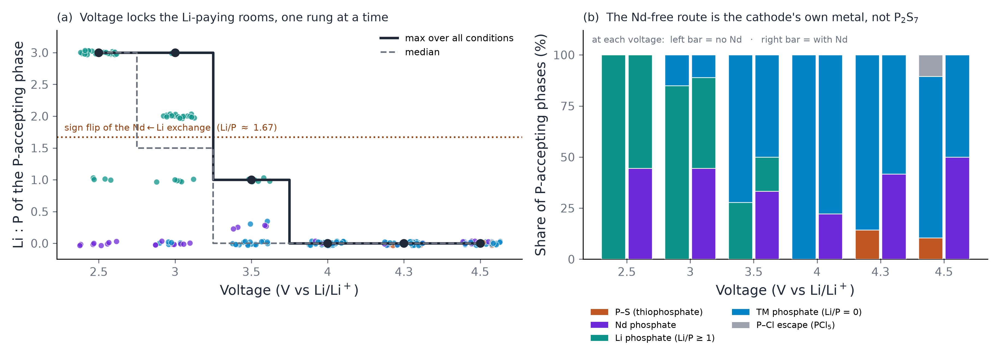
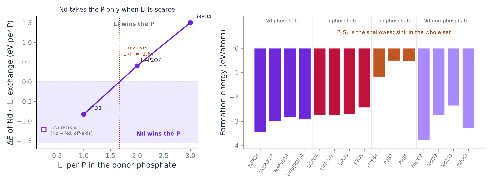
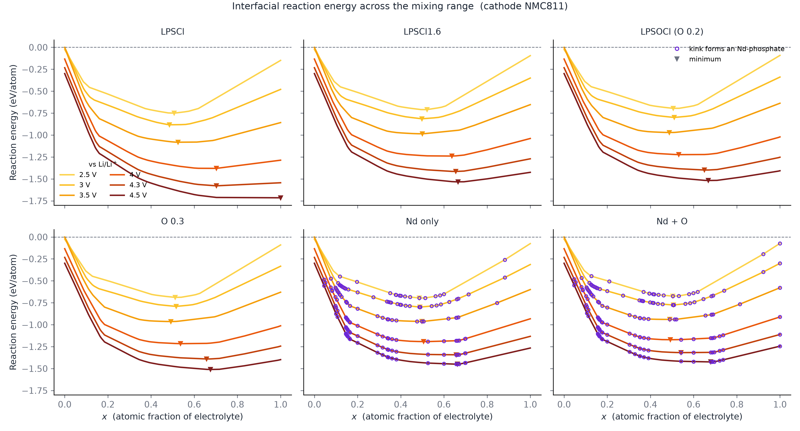
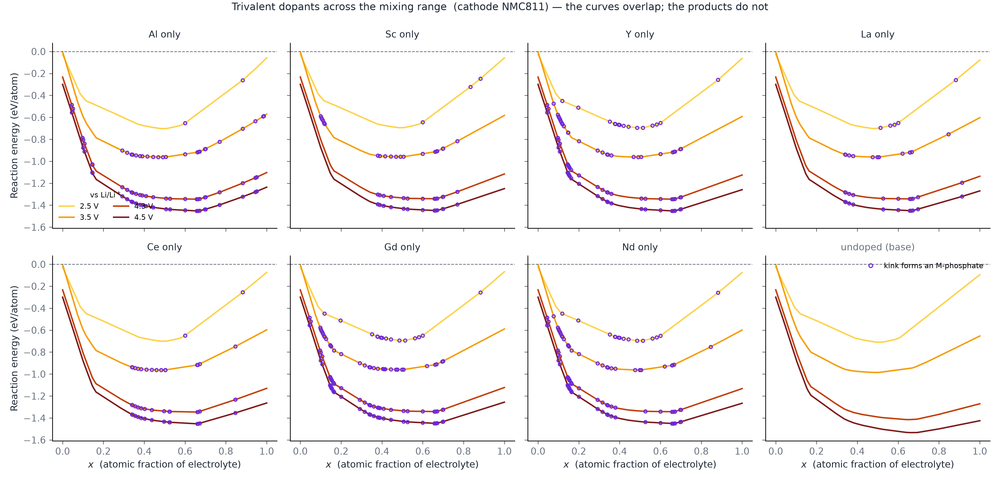
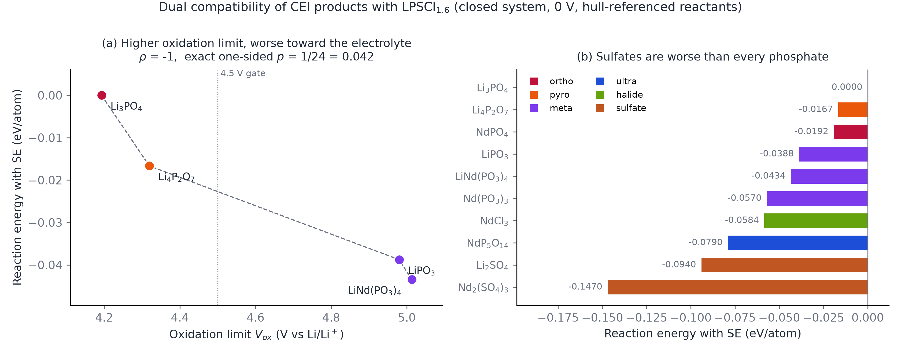
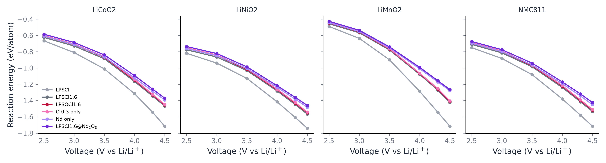

배경 지식 없이 읽는 설명을 같이 담았다
Nd 는 인산염 싱크다
고전압에서 Nd 가 하는 일 — CEI 계면 반응성의 Nd/O 분해
고체 전해질을 양극에 붙여 높은 전압까지 충전하면 둘이 닿은 면에서 반응이 일어나 새로운 층이 생긴다. 그 층이 잘 생기면 더 이상의 반응을 막아 주고, 잘못 생기면 전지가 계속 갉힌다. 이 페이지는 전해질에 Nd 와 O 를 넣으면 그 층이 어떻게 달라지는가를 계산으로 따진 기록이다. 실험은 하나도 없고, 전부 어떤 상이 생기는 것이 에너지상 이로운가를 데이터베이스 위에서 푼 것이다.
- 1 분해
- 2 산물이 말한다
- 2b 얼마나 — 정량 곡선
- 3 검증 — 절반 철회
- 4 전 혼합범위 스캔
- 5 다른 3가 도펀트
- 6 갭 단계 계획
- 7 반대쪽 접촉(전해질)
- 8 양극별 원자료
- 8b 반론 여덟
- 9 말하면 안 되는 것
- 고전압에서 Nd 계 계면은 남은 P 를 인산염으로 끌어간다 — 양극 TM 이 덜 빠진다
- 그 이득은 조건부다. 게이트를 전 점 통과한 열은 LiCoO₂ 4.30 V · LiNiO₂ 3.50 V 둘뿐 (24 칸 중 12 칸 탈락)
- 전해질 쪽은 “새로 망가뜨리지는 않는다” 까지
- “Nd 가 산화 안정성·전압창을 넓힌다” — 우리 데이터가 반증한다. 2.14 V → 1.92 V, 0.22 V 좁힌다
- “Nd 가 최적의 3 가 도펀트다” — 어느 축에서도 1 등이 아니다. 쓸 수 있는 것은 “Gd·Y·Sc·La 와 구분되지 않는다” 까지
- “NdPO₄ 가 Li₃PO₄ 보다 깊은 P 싱크다” — 철회됨 (+1.5035 eV/P 양수)
- 이 이득을 부동태화로 읽기 — 계면 반응 구동력이지 산물의 전자 성질이 아니다
질문 둘 — ① 이 효과가 Nd 특화인가 O 효과인가? ② Nd 여야만 하나, 다른 3가 양이온도 되나?
① 답 — Nd 와 O 둘 다 계면 반응성을 낮춘다. 다만 그 크기를 도펀트 화학으로 읽을 수 있는 것은 O 쪽뿐이다.
이 계산은 Nd 가 Li 자리에 들어간 경우다 (Nd + Li 결손). Nd³⁺ 하나가 Li⁺ 셋을 대신하므로 조성의 Li 가 줄어든다. 그런데 전압을 올릴수록 Li 가 적은 조성이 저절로 유리해 보인다 — grand potential 의 전압 기울기가 그 조성의 Li 수와 같기 때문이다(dΦ/dV = +NLi). 고전압에서 Nd 곡선이 가팔라 보이던 것은 대부분 이 효과였다. Li 를 같게 맞춘 무-Nd 대조군에서 Nd 항은 −0.0508 eV/atom(4.5 V)으로 부호가 뒤집힌다. Li 수가 변하지 않는 O 치환만 전압에 평평한 것이 그 증거다.
⇒ Nd 의 값어치는 반응에너지의 크기가 아니라 어떤 산물을 만드느냐에 있다 — §2 가 그것을 본다.
자리가 바뀌면 이 논리도 뒤집힌다. Nd 가 P 자리에 들어가면 Nd³⁺ 가 P⁵⁺ 를 대신하므로 전하를 맞추려고 Li 가 오히려 늘어난다 — 조성식 Li 가 5.40 → 5.44(x=0.02), 5.80(x=0.20) 으로 간다. Li 자리 치환(5.40 → 4.80, −11 %)과 반대 방향이다. 같은 전압 기울기(dΦ/dV = +NLi)를 그대로 적용하면, P 자리 치환은 고전압에서 오히려 불리해 보이는 쪽으로 기울어진다. ⇒ 위 문단의 판정은 Li 자리 치환에 한정된다. P 자리 경로의 계면 반응성은 이 계산에 들어 있지 않다 (§8b ④ 에서 이온전도도 쪽 단서만 다룬다).
‘두 효과가 그냥 더해진다’ 는 아직 조건부다. 두 치환의 효과가 단순히 더해진다는 관찰 (Nd 단독 +0.0465 와 O 단독 +0.0219 의 합 +0.0684 에 대해 둘 다 넣은 실측이 +0.0679, 잔차 0.0005 eV/atom)은 Li 를 보정하지 않은 축에서 얻은 것이다. 위에서 보았듯 Li 를 맞추면 Nd 항의 부호가 바뀌므로, 이 더해짐도 그 축을 다시 잡고 확인해야 한다. 지금 쓸 수 있는 문장은 “Li 를 보정하지 않으면 두 효과가 그냥 더해진다” 까지다.
이 답의 이전 판 — 2026-09-18 철회
저전압에선 O 가 더 이롭고,
고전압에선 Nd 가 압도적이다. 둘 다이고, 서로 독립이고,
전압에 따라 주역이 바뀐다.
전압에 따른 우열 역전을 도펀트 화학으로 읽은 것이었다. Li 를 맞춘 대조군이 그것을 반증한다(위 본문).
② 답 — 다른 3가도 된다. 이 기전은 Nd 고유가 아니라 3가 양이온의 성질이다(§5). 일곱을 여섯 축으로 재 봤더니 축마다 다른 원소가 1등이고, Nd 는 어느 축에서도 1등도 꼴등도 아니다.
기전 — Nd 는 더 좋은 인산염을 만드는 게 아니라 Li 를 안 쓰는 인산염 경로를 연다 (NdPO₄ 는 P 하나당 Li 0 개, Li₃PO₄ 는 3 개). 고전압이 Li 를 빼가면서 그 경로의 값어치가 커진다 — §3.
1. 분해 — 대조 조성 둘을 추가해서 갈랐다
전압 6 점 × 조성 4 — Li 재고 교란을 가르려고 대조 조성 둘을 추가했다
익숙한 것에 빗대면 블록 탑에서 블록을 빼는 것이다. 전지를 충전하면 전해질에서 Li 가 양극 쪽으로 빠져나간다 — 그러니까 전압을 올린다는 건 Li 를 더 많이 빼낸다는 뜻이다. 몇 개 빠져도 탑은 버티지만 어느 선을 넘으면 무너지는 모양 자체가 달라진다. 아래 전압 여섯 개는 "Li 를 이만큼 뺐을 때 무엇으로 무너지나" 를 여섯 번 물어본 것이고, 값이 위로 갈수록 덜 무너진다는 뜻이다.
기존 LPSCl1.6@Nd₂O₃ 는 Nd 치환과 O 치환이 같이 바뀌어서 둘을 못 갈랐다. 전하중성을 맞춘 대조 조성 둘을 추가해 축을 분리했다.
| 이름 | 조성 | Nd | O | 전하 |
|---|---|---|---|---|
| LPSCl1.6 (기준) | Li5.4 P S4.4 Cl1.6 | 0 | 0 | 0 ✓ |
| LPSOCl1.6 | Li5.4 P S4.2 O0.2 Cl1.6 | 0 | 0.2 | 0 ✓ |
| Nd only (신규) | Li4.8 Nd0.2 P S4.4 Cl1.6 | 0.2 | 0 | 0 ✓ |
| O 0.3 only (신규) | Li5.4 P S4.1 O0.3 Cl1.6 | 0 | 0.3 | 0 ✓ |
| LPSCl1.6@Nd₂O₃ | Li4.8 Nd0.2 P S4.1 O0.3 Cl1.6 | 0.2 | 0.3 | 0 ✓ |
⚠ 원자료(JSON·CSV)의 열 이름은 내부 코드명 그대로다 —
comp1=LPSCl · modelc=LPSCl1.6 · lpsocl=LPSOCl1.6 ·
modelc_nd=LPSCl1.6@Nd₂O₃ · nd_only · o_only_03.
기계 경로라 바꾸지 않는다(바꾸면 원장·게이트가 끊긴다). 사람이 읽는 이름만 이 문서에서 바꿨다.
![Four panels. (a) Delta reaction energy versus voltage for Nd only, O only and both, with the sum of parts overlaid; the Nd curve overtakes the flat O curve at 3.5 V and rises steeply. (b) Additivity residual inside the pre-registered plus-minus 0.010 band at every voltage. (c) The same quantities normalised to their 2.5 V value: delta Nd only rises 6.58 times while the amount of Nd-bearing product rises only 1.42 times and delta O only stays at 1.03. (d) Dot matrix of which phase the Nd ends up in at each voltage, rows ordered by phosphorus per Nd, showing NdPO4 at low voltage giving way to the condensed phosphates Nd(PO3)3 and NdP5O14 at high voltage.](cei_nd_o_decomposition.png)
nd_only branch only, matching the Δ(Nd only)
curve of (a); mixing in the co-substituted branch gives ×1.80 instead of ×1.42 and a
different conclusion.네 패널이 한 논지 사슬이다 — (a) 결과 · (b) 그 결과를 두 채널로 읽어도 되는가 · (c) 성장이 양 때문인가 · (d) 그럼 무엇이 바뀌는가.
왼쪽 위(a) 에서 선이 위에 있을수록 좋은 전해질이다. 세로축은 무도핑 기준으로 얼마나 덜 반응하느냐라서, 0 이 무도핑이고 위로 갈수록 덜 반응한다.
빨강(O 만)은 전압이 올라가도 거의 평평하다 — 2.5 V 에서든 4.5 V 에서든 이득이 같다. 보라(Nd 만)는 3.5 V 까지는 빨강보다 아래인데 그 뒤로 급격히 올라가 4.5 V 에서는 빨강의 4 배가 넘는다. 저전압에서는 O 가, 고전압에서는 Nd 가 주역이라는 말이 이 교차에서 나온다.
가장 중요한 것은 점선과 검은 선이 겹친다는 점이다. 점선은 "Nd 효과와 O 효과를 그냥 더한 값", 검은 선은 "둘을 실제로 같이 넣고 계산한 값" 이다. 둘이 겹친다는 건 서로 방해하지도 도와주지도 않는다는 뜻이다.
(b) 가 그 겹침을 확대한 것이다. 세로축은 (Nd 효과 + O 효과) − (둘 다) 이고, 0 이면 정확히 더해진다는 뜻이다. 노란 띠는 결과를 보기 전에 정해 놓은 합격선(±0.010)이고, 측정된 잔차는 그 띠의 1/20 수준이다. 문턱을 나중에 정했다면 이 그림은 아무 말도 못 한다 — 먼저 박았기 때문에 판정이 된다.
음영은 양극 4 종(LiCoO₂·LiNiO₂·LiMnO₂·NMC811)의 흩어진 범위다. 선은 그 넷의 평균이다.
(c) 는 (a) 의 성장이 어디서 오는지 를 묻는다. 세 선을 각자의 2.5 V 값으로 나눴다 (맨 왼쪽 점 기준 — 결과를 보고 고른 자리가 아니다). 2.5 → 4.5 V 에서 Nd 채널은 ×6.58, O 채널은 ×1.03 이다. Fig. 1 이 벌어지는 건 전부 Nd 때문이라는 말이 여기서 나온다.
그 위에 회색 파선이 hull 이 만드는 Nd 산물의 양이다. 같은 구간에서 ×1.42 밖에 안 커진다. 그래서 "Nd 산물이 더 많이 생겨서" 라는 제일 쉬운 설명이 닫힌다 — 보라와 회색 사이의 벌어진 면적이 그 설명으로 못 메우는 몫이다.
(d) 가 그럼 무엇이 바뀌는지 를 보여준다. 가로는 전압, 세로는 Nd 가 결국 가는 상이고 P/Nd(축합도) 순서로 쌓았다. 점 안 숫자는 양극 4 종 중 몇 개가 그 상을 주는지다. 2.5·3.0 V 에서는 넷 다 NdPO₄ 인데, 4.3·4.5 V 에서는 Nd(PO₃)₃ · NdP₅O₁₄ 로 올라간다 — 인산염이 축합된다.
이게 Nd 의 특이성이 아니라는 게 중요하다. §3 의 P-host 사다리가 여섯 전해질 전부(무Nd 포함)에서 P 를 받는 상의 Li:P 가 3→2→1→0 으로 내려간다고 말한다. 전압이 인산염에서 Li 를 벗기는 것이 계 전체의 사실이고, (d) 는 그 사실이 Nd 쪽에서 드러난 모습이다.
⚠ (c)(d) 는 설명 두 개를 닫을 뿐 새 설명을 열지 않는다. 남은 성장은 산물 양으로도, Fig. 2(a) 의 쌍별 교환에너지로도 안 채워진다(그건 4.0 V 위에서 평평하다). 그리고 Δ/양 은 내가 나눈 값이지 따로 잰 양이 아니다 — 분해지 기전이 아니다.
세로축의 reaction energy 는 무엇인가
두 물질을 맞닿게 놓고 섞이는 모든 비율을 다 따져서, 가장 많이 에너지를 내놓는 조합을 찾은 값이다. 더 음수일수록 더 격렬하게 반응한다 = 계면이 더 나쁘다.
- 섞는다. 전해질 c₁ 과 양극 c₂ 를 비율 x 로 — x·c₁ + (1−x)·c₂, x 는 0(양극만)에서 1(전해질만)까지.
- 각 x 에서 "이 조성이 가장 안정하게 있을 수 있는 모습" 을 묻는다. 그게 hull 이다 — MP 의 그 화학계 물질을 전부 놓고, 이 조성을 어떤 상들로 쪼개야 에너지가 제일 낮은지 푼다.
- 반응에너지 = 쪼갠 뒤 − 쪼개기 전.
E_rxn(x) = E_hull(섞인 조성) − [ x·E(c₁) + (1−x)·E(c₂) ]
음수면 저절로 일어난다는 뜻이고, 클수록 세게 일어난다. - x 를 훑어 최솟값을 고른다. get_kinks() 가 주는 것이 그 곡선의 꺾이는 점들이다 — 산물 조합이 바뀌는 자리. 표에 쓰는 수는 그중 가장 음수인 것. 꺾임을 전부 남긴 것이 §4 다.
전압은 어디서 들어오나 — grand potential
보통 반응은 원자 개수가 보존된다(닫힌계). 그런데 충전 중에는 Li 가 양극 쪽으로 빠져나가 Li 개수가 안 지켜진다. 그래서 Li 저장고를 연다 — Li 를 넣고 빼는 값을 화학퍼텐셜 μLi 로 정하고, 에너지 대신 grand potential Φ = E − μLi·NLi 를 쓴다. 그리고 전압이 곧 그 μ 다:
μ_Li = μ_Li(metal) − V # μ_Li(metal) = −1.9089 eV/atom (원장 기록값) gpd = GrandPotentialPhaseDiagram(entries, {Element("Li"): mu0 − V})
뜻 — 전압을 올린다 = μLi 를 낮춘다 = Li 를 붙들고 있는 게 손해가 된다. 4.5 V 면 Li 는 금속 기준보다 4.5 eV 불리하다. Li 를 많이 가진 상은 hull 에서 밀려나고, 양극은 저절로 탈리튬화된다. ★ 이 그림의 가로축이 그것이다 — 전압 여섯 점은 "Li 를 이만큼 뺐을 때" 를 여섯 번 따로 물어본 것이다. 시간축이 아니다.
왜 "손해" 인가 — 산수 두 줄로
① Φ 정의에 μ 를 그대로 대입한다
Φ = E − μ_Li·N_Li = E − (−1.9089 − V)·N_Li = E + (1.9089 + V)·N_Li ← 부호가 플러스로 뒤집힌다
Li 한 개를 품고 있을 때마다 Φ 에 (1.9089 + V) eV 가 더해진다. 그 상이 실제로 에너지를 더 쓰는 것이 아니라, 저장고와 견줄 때 Li 한 개당 벌금이 붙는 것이다. 이것이 "손해" 의 정체다.
② 그래서 전압에 대한 기울기가 곧 Li 개수다
dΦ/dV = +N_Li
전압을 1 V 올릴 때마다 그 상은 품고 있는 Li 개수만큼 eV 씩 비싸진다. P 하나당으로 환산하면 (아래는 계산 결과가 아니라 Li/P × ΔV 산수다):
| 상 | Li/P | 0 → 4.5 V 에서 Φ/P 상승 |
|---|---|---|
| Li3PO4 | 3 | +13.5 eV |
| Li4P2O7 | 2 | +9.0 |
| LiPO3 | 1 | +4.5 |
| NdPO4 | 0 | 0 — 안 움직인다 |
전압축 위에서 NdPO4 만 제자리고 나머지는 전부 위로 밀려 올라간다. 위 Fig. 1 에서 Nd 곡선만 전압에 가파르고 O 곡선이 평평한 것이 여기서 온다 — O 효과는 Li 개수를 건드리지 않는다.
③ 물리로 읽으면 기회비용이다
(가) 왜 Li 한 개가 딱 V eV 인가 — 환율이 1:1 인 이유
Li 한 개가 양극에서 빠질 때 둘로 갈라진다:
Li → Li⁺ (전해질을 건너 음극으로) + e⁻ (외부 회로를 돌아 음극으로) ← 여기서 일을 한다
전자 하나가 전위차 V 를 건너며 한 일은 전하 × 전압 = e × V 다. 그런데 전하 e 짜리가 V 볼트를 건널 때의 일이 정확히 V 전자볼트 — eV 라는 단위가 그러라고 정의된 것이다. 그리고 Li 하나가 전자를 딱 하나 데려간다(Li⁺ 는 1가).
Li 한 개 ↔ 전자 한 개 ↔ V eV. 환율 1:1 이 여기서 나온다. 4.5 V 면 Li 하나가 나갈 때마다 회로가 4.5 eV 를 받는다.
(나) 기회비용 — 잃은 돈이 아니라 안 번 돈
Li3PO4 안의 Li 는 가만히 있어도 에너지를 잃지 않는다. 손해는 잃은 것이 아니라 벌 수 있었는데 안 번 것이다.
현금을 장롱에 넣어 두면 돈이 줄지 않는다. 그런데 은행에 넣었으면 이자를 받았을 텐데 안 받았다. 그 이자가 기회비용이다.
전압이 오른다 = 이자율이 오른다. 장롱에 두는 것이 점점 더 아까워진다. Li3PO4 는 P 하나당 Li 를 3 개나 장롱에 넣어 둔 상이고, NdPO4 는 장롱이 비어 있다.
(다) 저울 — 붙잡는 힘 vs 부르는 값
= Li 한 개 떼는 데 드는 에너지
1.9089 + V
전압은 오른쪽 접시에만 추를 얹는다. 왼쪽이 무거우면 Li 가 남고(그 상이 산다), 오른쪽이 넘어서는 순간 Li 가 나간다 (그 상이 분해된다). 상마다 자기 저울이 있고 자기 전압에서 기운다 — Li 를 많이 든 상은 기울 접시가 여러 개라 더 빨리 무너진다. 이것을 부등식으로 쓴 것이:
그 상에서 Li 한 개를 떼는 데 드는 에너지 > 1.9089 + V
(라) 1.9089 가 정확히 무엇을 하는 숫자인가
−1.9089 eV/atom 은 Li 금속 한 원자가 (우리 상들과 같은 눈금에서) 갖는 에너지다. ⚠ "Li 금속에서 Li 하나 떼는 데 드는 에너지(응집에너지)" 가 아니다 — 그것은 다른 수다. 이것은 MP 총에너지 눈금 위의 값이고, 우리 상들도 같은 눈금이라 그냥 빼면 된다는 것이 요점이다.
V = 0 에서 부등식을 풀어 쓰면 뜻이 바로 나온다:
E(Li 뺀 상) − E(상) > 1.9089 ⇔ E(Li 뺀 상) + E(Li 금속 1개) > E(상)
읽으면 "Li 뺀 상 + Li 금속" 으로 쪼개는 것보다 그냥 상으로 있는 것이 낮다. 그래서 0 V 의 문턱은 "이 상이 Li 를 Li 금속보다 세게 붙잡나" 라는 질문이고, 전압은 그 문턱을 V 만큼 위로 밀 뿐이다.
| V vs Li/Li⁺ | 문턱 = 1.9089 + V (eV) |
|---|---|
| 0 | 1.91 |
| 2.5 | 4.41 |
| 3.5 | 5.41 |
| 4.5 | 6.41 |
(마) "hull 에서 밀려난다" 는 무슨 뜻인가
hull 은 그 조성에서 가능한 가장 낮은 Φ 다. 상 하나로 있을 때의 Φ 가 hull 보다 높으면 여러 상으로 쪼개는 것이 더 싸다는 뜻이고, 그러면 그 상은 못 산다. 그것이 밀려난 것이다 = 저절로 탈리튬화.
⚠ 이 저울은 설명이지 계산이 아니다
우리는 상마다 "Li 하나 떼는 비용" 을 잰 적이 없다. 실제 계산은 hull 이 모든 분해 경로를 동시에 비교한 것이고, Li 를 하나씩 떼는 경로만 겨루는 것이 아니라 Li3PO4 → Li4P2O7 + Li2O 처럼 상 전체가 재배열되는 경로도 같이 겨룬다. 이 부등식은 그 결과를 사람이 이해하는 그림이다.
그리고 "저절로" 는 시간이 아니다. 전부 0 K 열역학이라 "그렇게 되고 싶어 한다" 는 뜻이지 "얼마나 빨리 되는가" 가 아니다 — 속도·수송은 이 계산에 없다.
⚠ §3 의 교환 표에는 μLi 가 들어가지 않는다 — 축이 둘이다
Li3PO4 + ½ Nd2O3 → NdPO4 + 1.5 Li2O 는 양변 Li 가 3 개로 같다. Li 가 저장고로 오가지 않으니 μ_Li·ΔN_Li = 0 이고, V 를 바꿔도 +1.5035 eV/P 는 한 자리도 안 변한다. 그 표가 재는 것은 "Nd 가 Li 보다 P 를 더 잘 붙잡나" 하나뿐이고, 답은 아니다.
전압이 하는 일은 그 값을 바꾸는 것이 아니라 Li3PO4 를 만들 Li 예산 자체를 없애는 것이다:
전압 ↑ → μ_Li ↓ → 계면에서 쓸 Li 예산 ↓ → 사다리 아래 칸 → Li/P ≈ 1.67 밑에서 부호 반전
Li 예산은 이 두 축을 잇는 해석의 다리이지 §3 표가 직접 재는 양이 아니다. 둘을 섞어 "Nd 가 고전압에서 Li3PO4 보다 안정하다" 라는 한 문장으로 말하면 안 된다 — 그 표는 그런 말을 한 적이 없다. 사다리 전체는 §3 과 Fig. 4a 에 있다.
MP 에서 직접 뽑는 법 (최소판)
from mp_api.client import MPRester from pymatgen.core import Composition, Element from pymatgen.analysis.phase_diagram import PhaseDiagram, GrandPotentialPhaseDiagram from pymatgen.analysis.interface_reactions import GrandPotentialInterfacialReactivity els = ["Li","P","S","Cl","Co","O"] # 두 물질의 원소 합집합 with MPRester(os.environ["MP_API_KEY"]) as mpr: entries = mpr.get_entries_in_chemsys( els, additional_criteria={"thermo_types": ["GGA_GGA+U"]}) mu0 = min(e.energy_per_atom for e in entries # Li 금속 기준 = −1.9089 if e.composition.reduced_formula == "Li") V = 4.5 pd = PhaseDiagram(entries) # 닫힌계 — 정규화에 쓴다 gpd = GrandPotentialPhaseDiagram(entries, {Element("Li"): mu0 - V}) gir = GrandPotentialInterfacialReactivity( Composition("Li6PS5Cl"), Composition("LiCoO2"), gpd, pd_non_grand=pd, include_no_mixing_energy=True, use_hull_energy=True) for k in gir.get_kinks(): print(f"x={k[1]:.3f} E={k[2]:+.4f} eV/atom {k[3]}")
찍히는 것이 kink 목록이고, 그중 E 최솟값이 표에 쓰는 수다. 출처 tools/oxidation/interface_reactivity_v2.py.
- 절대값을 다른 논문과 나란히 놓지 않는다. GGA_GGA+U 는 혼합 눈금이다 — 상마다 +U/GGA 가 다르고 MP 보정이 그걸 맞춘다. 보정 체계가 다르면 절대값 비교가 뜻이 없다.
- 그래서 이 그림은 Δ 만 본다. 같은 눈금끼리 빼면 보정이 상쇄된다.
- 최솟값이 x=0 이나 1 에 붙으면 가짜다 — 상대가 반응식에 안 들어간 것이고, 전해질 혼자 분해된 에너지를 계면 반응인 척 내놓는다. ⚠ 닫힌계의 끝점은 정상 판정이다 — 한 깃발로 읽으면 멀쩡한 판정을 버린다.
- 이건 구동력이지 부동태화가 아니다. "얼마나 반응하고 싶어 하는가" 이지 "생긴 층이 전자를 막는가" 가 아니다 — 그건 §6 이 답한다.
| V vs Li/Li⁺ | Δ Nd only | Δ O only | 합 | 실측 (둘 다) | 잔차 |
|---|---|---|---|---|---|
| 2.5 | +0.0147 | +0.0213 | +0.0361 | +0.0363 | −0.0002 |
| 3 | +0.0162 | +0.0226 | +0.0388 | +0.0392 | −0.0004 |
| 3.5 | +0.0240 | +0.0216 | +0.0456 | +0.0441 | +0.0016 |
| 4 | +0.0515 | +0.0212 | +0.0728 | +0.0729 | −0.0001 |
| 4.3 | +0.0754 | +0.0226 | +0.0981 | +0.0970 | +0.0011 |
| 4.5 | +0.0970 | +0.0220 | +0.1190 | +0.1183 | +0.0008 |
세 판정 모두 통과 (문턱은 실행 전에 봉인):
- 두 효과가 더해지는가 — 평균 잔차 +0.0005, 문턱 0.010 의 1/20. 봉인 카드가 문턱을 “24 조건 평균”에 걸었고(실행 전에 박은 문구다) 그 평균이 통과다. 덧붙여 24 조건이 개별로도 전부 문턱 안이다 — 잔차 범위 −0.0033 ~ +0.0081 이고 최대 |잔차| 0.0081 < 0.010. 평균만 통과하고 어느 한 조건이 새는 상황이 아니다.
- O 를 늘린 만큼 비례하는가 — O 0.2 에서 0.3 으로 선형외삽 +0.0218 vs 실측 +0.0219. 차이 0.0001.
- ⛔ 2026-09-18 철회 — 전압에 따라 달라지는가.
원문:
O 는 3 % 변화, Nd 는 6.6 배. 교차점 약 3 V — 고전압은 Nd 가 주역.
측정 자체는 맞지만 해석이 틀렸다. 6.6 배는 Nd 화학이 아니라 Li 재고다 — Li 를 같게 맞춘 무-Nd 대조군(Li4.8P1S4.4Cl1.6)을 넣으면 Nd 항이 −50.8 meV/atom(4.5 V)으로 부호가 뒤집힌다. ΔNLi = 0 인 조성 둘(O 0.3 · LPSOCl)만 전압에 평평하고(−5.5 · −3.6 meV/V), ΔNLi ≠ 0 인 조성은 예외 없이 가파르며 기울기 부호가 ΔNLi 부호를 따라간다. Li 하나당 기울기는 84~94 meV/atom/V 로 세 쌍에서 2 % 안에 모인다. ⇒ (a)·(c) 를 이 논지의 증거로 쓰지 않는다. 근거는 §2 의 산물 쪽으로 옮겼다 (db/properties/cei_nd_p_capture_result_2026_09_18.json).
2. 왜 고전압에서 Nd 인가 — 산물이 말한다
hull 산물 목록의 패턴 — 남은 P 가 어디로 가나
hull 은 무엇이 생기는지를 말하지 왜 를 말하지 않는다. 그런데 산물 목록에 뚜렷한 패턴이 있다.

0 선이 전부다. 위에 있으면 Nd 가 그 상에게서 P 를 못 뺏고, 아래면 뺏는다. (a) 에서 2.5 V 는 점이 전부 위에 있고 3.5 V 부터는 전부 아래에 있다 — 100 % 가 뒤집힌다. Nd 가 세지는 것이 아니라 상대가 바뀌는 것이다.
(b) 가 그 상대를 보여준다. 오른쪽 위 Li₃PO₄ 는 +1.50 — Li 가 넉넉할 때 P 가 앉는 자리이고 Nd 가 진다. 왼쪽 아래 전이금속 인산염 여섯은 −1.00 ~ −2.16 — Li 가 없을 때 P 가 앉는 자리이고 Nd 가 이긴다. 이것이 §3 의 Li 예산 사다리(Fig. 4a)에 양극 금속 칸을 붙인 것이고, 점선이 그 사다리의 부호 반전 자리다.
회색 띠(±0.30 eV/P)는 이 방법이 구분 못 하는 폭이다. 여섯 전이금속 값이 전부 띠 밖이라 부호는 믿는다. 그런데 서로는 0.01~0.26 밖에 안 떨어져 있어 "Co 에서 제일 크게 이긴다" 같은 순위는 못 쓴다.
⛔ 이 그림이 설명하는 것과 못 하는 것을 나눠야 한다
설명한다 — 시작. 부호가 뒤집히는 자리는 3.0–3.5 V 다 (교환 ΔE 중앙값 +0.40 → −1.22). ⚠ 그런데 그 자리는 고전압이 아니다 — LiCoO₂ 는 보통 3.0–4.2 V 로 돈다. "고전압에서만 켜지는 기전" 이라고 쓰면 틀린다.
설명하지 못한다 — 성장. 교환 ΔE 중앙값은 4.0 V 에서 −1.751 로 포화하고 4.3·4.5 V 도 같은 값이다. 그런데 Fig. 1 의 Δ(Nd only)는 그 구간에서 0.0515 → 0.0970 으로 1.9 배 커진다. 부호는 시작을 설명하고 성장은 설명 못 한다. 남은 후보는 양이다 — 얼마나 많은 P 가 그 경로를 타느냐. 그것이 §2 가설 4 번이고, 이 계산은 계수를 안 보므로 재지 못한다.
그리고 교환이 이득의 전부가 아니다. 2.5 V 에서는 음수가 하나도 없는데(Nd 가 진다) Fig. 1 의 Δ 는 이미 +0.0147 로 이롭다.
⛔ 그리고 이 그림의 부호로 hull 이 고른 상을 설명하지 않는다 (2026-09-17 · 결정 D-2026-09-17-pairwise-exchange-resolution-limit 1저자 검토 전). 같은 날 세 번 어긋났다 — ① 첫 판 chemsys 에 Cl·S 가 없어 NdCl₃ 채널을 못 봤고, ② 넣고 보니 Nd 는 P 를 선호(−0.50 / −0.67 eV/P)하는데 hull 산물은 NdCl₃ 였고, ③ Mn/Ni 로 갈라 재니 방향은 관측과 맞았지만(Mn +0.155 못 뺏음 · Ni −0.125 뺏음) 크기가 ±0.30 eV/P 띠 안이라 못 가른다. 같은 판에서 Li₂SO₄ 쌍(+0.331)은 hull 산물과 부호가 어긋났다. 2 상 교환은 “어느 쪽이 그 상을 더 원하나” 의 방향 힌트이지, hull 이 무엇을 낼지의 예측이 아니다 — hull 은 모든 상을 동시에 풀고 교환은 둘만 겨룬다.
⚠ 교환에너지가 없는 상 9 개는 (a) 에서 빠졌다 — Nd 인산염 셋(NdPO₄·Nd(PO₃)₃·NdP₅O₁₄, 교환 상대가 자기 자신이라 정의되지 않는다), Li+전이금속 혼합 인산염 넷(LiMnPO₄ 등, 아직 안 쟀다), P₂S₇·PCl₅(이 chemsys 밖). Nd 계에서 P 의 일부가 Nd 인산염으로 가므로 (a) 의 점은 "Nd 가 아직 안 가져간 P" 쪽에 치우쳐 있다. 원자료 cei_tm_exchange_2026_09_17.json · cei_p_host_ladder_fig.csv.
4.5 V · LiCoO₂ 에서 반응식을 나란히 놓으면 차이가 한눈에 보인다.
가설 — Nd³⁺ 는 강한 인산염 형성체다 2026-09-16 기록 · 네 항목 모두 한정됨
- 저전압에선 P 가 아직 PS₄ 골격에 붙어 있다. Nd 가 할 일이 없다. ⛔ 산물에 안 보인다
- 전압이 오르면 S 가 산화되고 P–S 가 끊어진다. 풀려난 P 가 갈 곳이 필요하다. ⛔ 산물에 안 보인다
- Nd 가 없으면 → P₂S₇ (P–S, 덜 안정).
Nd 가 있으면 → NdPO₄ · Nd(PO₃)₃ · NdP₅O₁₄ · LiNd(PO₃)₄. ⚠ 범위가 훨씬 좁다 - 풀려나는 P 의 양이 전압과 함께 늘어나므로 Nd 의 이득도 전압과 함께 커진다. ⚠ 결론은 맞고 이유는 다르다
⛔ 3 번은 §3 에서 반쯤 반증됐다. "희토류 인산염이 더 안정하다" 는 Li₃PO₄ 기준으로는 틀렸다. 살아남은 것은 "P₂S₇ 보다 훨씬 안정하다" 쪽이고, Nd 가 이기는 진짜 이유는 따로 있다 — Li 를 안 쓴다.
⛔ 1·2·4 번도 산물이 뒷받침하지 않는다 (2026-09-17 · 사후 관찰 · 결정 D-2026-09-17-cei-p-host-li-ladder · 1저자 검토 전)
같은 hull 의 최소 꺾임 반응식에서 P 를 받은 상을 꺼내 보면, 2.5 V 에서 이미 P 가 인산염이다. PS₄ 에 갇혀 있다가 풀려나는 그림이 최소 꺾임에는 없다. 전압과 함께 변하는 것은 P 의 양이 아니라 P 를 받는 방의 Li 값이다:
| V | LiCoO₂ | LiNiO₂ | LiMnO₂ | NMC811 | 칸 (max Li/P) |
|---|---|---|---|---|---|
| 2.5 | Li3PO4 3 | Li3PO4 3 | Li3PO4 3 | Li3PO4 3 | 3 |
| 3 | Li4P2O7 2 | Li4P2O7 2 | Mn2P2O7 0 | Li4P2O7 2 LiMnPO4 1 | 2 |
| 3.5 | LiPO3 1 | Ni(PO3)2 0 | Mn(PO3)2 0 | Ni(PO3)2 0 Mn(PO3)2 0 | 1 |
| 4 | CoP4O11 0 | Ni(PO3)2 0 | Mn(PO3)2 0 | Ni(PO3)2 0 Mn(PO3)2 0 | 0 |
| 4.3 | CoP4O11 0 | Ni(PO3)2 0 | P2S7 0 Mn(PO3)2 0 | MnP4O11 0 Ni(PO3)2 0 | 0 |
| 4.5 | CoP4O11 0 | Ni(PO3)2 0 | 끝점 — | NiP4O11 0 MnP4O11 0 | 0 |
무도핑 LPSCl1.6 · 상 이름 뒤 숫자가 Li/P · 보라 = Li 를 안 쓰는 방 · 주황 = P–S 수용상 · "끝점" = x = 1 자체분해라 계면 반응이 아니다(뺐다).
Li/P 가 3 → 2 → 1 → 0 으로 내려간다. 전해질 6 종 전부 같은 방향이고 4.0 V 이상은 전부 0 이다. 이것이 §3 의 Li 예산 사다리와 같은 것인데, 거기는 교환반응으로 따로 계산했고 여기는 계면 산물 자체가 같은 사다리를 타고 내려간 것이다 — 독립 관측이다.
그래서 4 번은 이렇게 고쳐 읽는다. 전압이 하는 일은 P 를 더 풀어놓는 것이 아니라 P 가 갈 수 있는 방을 비싼 것부터 차례로 잠그는 것이다. 4 V 위에서는 Li/P = 0 인 방만 남고, Nd 는 그런 방을 여러 개 가지고 있다. 3.0–3.5 V 의 전환은 선택지로 설명된다. 결론("Nd 이득이 전압과 함께 커진다")은 Fig. 1 에서 측정된 것이라 그대로다 — 바뀐 것은 이유다.
⚠ 2026-09-17 자기정정 — "공급이 아니라 선택지다" 는 과했다. 교환에너지를 재 보니(Fig. 2) 선택지는 3.0–3.5 V 의 전환만 설명한다. 교환 ΔE 중앙값은 4.0 V 에서 −1.751 로 포화하는데 Fig. 1 의 Δ 는 4.0→4.5 V 에서 1.9 배 더 커진다. 그 성장은 선택지로 설명되지 않고, 남은 후보는 양이다 — 즉 가설 4 번이 그 구간에서는 다시 살아 있다. 계수를 재기 전에는 어느 쪽도 못 정한다.
3 번의 범위 — P₂S₇ 수용상은 LiMnO₂ 에서만, 4.3 V 이상에서만 나온다. 나머지 무도핑 조건은 전이금속 인산염(CoP₄O₁₁ · Ni(PO₃)₂ · Mn(PO₃)₂)으로 가고 그것들도 Li/P = 0 이다. 무도핑 계도 고전압에서 Li 없는 방을 찾아내되, 그 방은 양극의 전이금속을 쓴다. Nd 는 전해질이 자기 방을 들고 오는 쪽이다.
⚠ 이 관찰이 못 하는 것 — (1) 최소 꺾임 하나만 봤다 — 나머지 꺾임까지 본 것은 §4(Fig. 5)다. (2) 계수를 안 보므로 "풀려난 P 가 몇 mol 인가" 를 재지 않는다 — 그래서 4 번의 공급량 가설을 반증한 것이 아니라 뒷받침하지 못하는 것이다. (3) 결과를 본 뒤의 관찰이라 사전등록된 판정이 아니다 — 1저자 검토 전이다. 원자료 db/properties/cei_p_host_ladder_2026_09_17.json.
‘두 효과가 더해진다’ 는 말의 뜻 — O 는 격자 안에서 이미 붙어 있는 P 를 미리 인산염화하고(그래서 전압 무관한 상수 오프셋), Nd 는 풀려난 P 를 사후에 잡는다. 다른 P 풀에 작용하니 서로 간섭하지 않는다. ⚠ 이 설명은 1·2 번에 기대고 있다 — 위에서 그 전제가 산물에 안 보였으므로 이것도 가설 지위다. 두 효과가 더해진다는 것 자체는 Fig. 1(b) 에서 측정된 사실이고(잔차가 문턱의 1/20), 흔들린 것은 왜 더해지는가 쪽이다.
이 논리는 Xiao 2020 리뷰의 Li₃PO₄ 싱크(생성E −2.767 eV/atom)와 같은 구조다. 다만 싱크가 Li₃PO₄ 가 아니라 희토류 인산염이다.
2b. 그 산물이 양극을 얼마나 아끼나 — 정량 곡선
TM 보호율 곡선 — 24 칸 중 12 칸 탈락, 전 점 통과는 LiCoO₂ 4.30 V · LiNiO₂ 3.50 V 둘뿐
§2 는 무엇이 생기는지를 보였다. 여기는 얼마나 다. 지표는 좌변 양극이 내놓은 전이금속 중 인산염으로 끌려간 몫이고, 대조군은 Li 를 같게 맞춘 무-Nd 조성이다 (base 가 아니다 — base 와 비교하면 §1 을 무너뜨린 그 Li 재고 교란이 그대로 들어온다).
⭐ 예측식을 곡선보다 먼저 세웠다. x(Nd) = 0.02 와 0.20 두 점만 보고 NdP₅O₁₄ 의 화학식(P/Nd = 5)에서 보호율 = min(1, k·x/(1−x)) 를 유도한 뒤 0.05 · 0.10 · 0.15 를 돌렸다. 곡선을 보고 식을 맞춘 것이 아니다.
![Three panels. (a) Cathode transition-metal spared from phosphate versus Nd content, for LiCoO2 at 4.3 V and LiNiO2 at 3.5 V; measured points fall on dashed curves min(1, k x over 1 minus x) with k equal to 5 and 4 respectively, and the target composition x equals 0.02 is marked. (b) Stacked bars of where the electrolyte phosphorus goes at 4.3 and 4.5 V; a thiophosphate slice opens at 4.5 V for x of 0.10 and 0.15. (c) Absolute difference in mixing fraction against the undoped control versus Nd content, one line per cathode and voltage; only two columns stay inside the 0.05 comparability band.](cei_nd_protection.png)
읽는 법 — 세 패널이 한 사슬이다
(a) 는 규칙이 맞나. 점이 실측, 파선이 예측인데 맞춘 매개변수가 하나도 없다. 파선의 유일한 수 k 는 hull 이 그 전압에서 고른 Nd 인산염의 P/Nd 이고, 반응식에서 읽은 값이다. §1 패널 (d) 의 상 사다리가 곧 이 계수다 — NdPO₄(1) → LiNd(PO₃)₄(4) → NdP₅O₁₄(5) 으로 축합될수록 Nd 하나가 받는 P 가 많아지고, hull 은 전압이 오를수록 더 축합된 쪽을 고른다. ⇒ Nd 의 수용력이 전압과 함께 커진다 — 필요해지는 구간에서. (d) 는 장식이 아니라 계수다.
(b) 는 그래서 이로운가. 4.3 V 에서는 Nd 가 가져간 만큼 회색(양극 TM 인산염)이 줄어든다. 그런데 4.5 V · x ≥ 0.10 에서 주황(P₂S₇)이 열린다 — 남은 P 가 양극 대신 티오인산염으로 갔다. P₂S₇ 는 §3 이 이 집합에서 제일 얕은 P 싱크(E_f −0.5120 eV/atom)로 못박은 상이다. ⚠ 나쁜 이유를 정확히 쓴다 — P₂S₇ 는 전해질과 −0.0112 로 거의 안 싸운다(같은 티오인산염 계열이다, §7 추가분). 그러니 전해질을 공격해서가 아니라 P 를 얕게 잡아서 나쁘다. 그 칸의 "100 % 보호" 는 보호가 아니다.
(c) 가 이 절에서 제일 중요하다. 몫의 분모는 좌변 양극이 내놓은 TM 인데, 조성이 바뀌면 최소 꺾임이 다른 혼합비 x 에 앉는다. 그러면 SE:양극 비가 달라 분모가 같은 양이 아니다. 도구 주석의 "좌변 TM 으로 정규화하니 x 무관" 은 한 반응 안에서만 맞다. 24 칸 중 12 칸이 이 게이트(또는 P₂S₇ 게이트)에 걸리고, 전 농도에서 통과한 열은 LiCoO₂ 4.30 V · LiNiO₂ 3.50 V 둘뿐이다. 양극이 달라 독립 확인 둘이 된다.
1저자 조성 Li₅.₄₄Nd₀.₀₂P₀.₉₈S₄.₃₇O₀.₀₃Cl₁.₆ 는 곡선 어디에 있나
| x(Nd) | 0.02 | 0.05 | 0.10 | 0.15 | 0.20 |
|---|---|---|---|---|---|
| 보호율 (LiCoO₂ 4.3 V) | 10.3 % | 26.6 % | 55.9 % | 88.4 % | 100 % |
| Li 재고 (base 5.40) | 5.44 | 5.50 | 5.60 | 5.70 | 5.80 |
기전은 x = 0.02 에서도 그대로 켜져 있다 — Nd 전량이 NdP₅O₁₄ 로 간다. 줄어드는 것은 양이다. 그리고 P 치환은 전 구간에서 Li 를 늘린다(Li 치환이면 5.40 → 4.80 으로 11 % 준다) — 보호를 사면서 Li 재고를 내주지 않는다. 곡선이 5x/(1−x) 라 초반이 가파르므로, x 를 0.02 → 0.05 로 올리면 보호가 2.6 배가 되고 Li 는 오히려 +0.06 늘어난다.
⚠ 여기서 "Li 재고" 는 조성식의 Li 수이지 측정된 이온전도도가 아니다. Nd 계 σ 는 아직 안 쟀다.
원자료 cei_nd_protection_curve.csv
(34 행 · gate_pass·gate_fail_reason 열 — 탈락 12 행도 남긴다) ·
예측선 cei_nd_protection_fig.csv ·
기록 db/properties/cei_nd_p_capture_result_2026_09_18.json (1저자 검토 전) ·
문헌·자가반증 감사 db/properties/cei_nd_novelty_audit_2026_09_18.json (1저자 검토 전).
3. 검증 — 그리고 가설의 절반이 틀렸다
균형반응 10 개 — 검산 고리 둘이 닫히고, 가설의 절반이 틀렸다 (+1.5035 eV/P 양수)
§2 의 가설을 재려고 같은 hull 에서 균형반응 10 개를 돌렸다
(ComputedReaction, 계수는 도구가 잡는다). 검산 고리 둘이 닫힌다 —
③−④ = ⑤−⑥ = ① = +1.5035, 소수 4 자리까지.
⛔ 철회 — "NdPO₄ 가 Li₃PO₄ 보다 깊은 P 싱크다" 는 틀렸다. Li₃PO₄ + ½Nd₂O₃ → NdPO₄ + 1.5 Li₂O 가 +1.5035 eV/P 로 양수다. 생성에너지 표도 같은 말을 한다 — P 하나당 Li₃PO₄ 가 더 깊다.
그런데 Li 예산을 낮추면 부호가 뒤집힌다
익숙한 것에 빗대면 예산 문제다. 같은 P 한 개를 붙잡는 데 Li₃PO₄ 는 Li 를 3 개 쓰고 NdPO₄ 는 0 개 쓴다. Li 가 넉넉할 때는 비싼 쪽이 더 튼튼해서 그쪽으로 간다. 그런데 고전압이란 Li 가 양극으로 빠져나간 상태라 Li 가 희소해지고, 그때는 "3 개짜리" 를 살 수 없다. 그래서 Nd 는 더 좋은 인산염을 만드는 것이 아니라, Li 를 안 쓰는 선택지를 하나 더 열어 주는 것이다.
가장 깊은 싱크인데, 그 값을 치러야 들어간다
Li₃PO₄ 보다 얕지만 값이 안 오른다
-0.5120 eV/atom
Nd 가 있으면 — NdPO₄ 라는 Li 안 드는 방이 있다 → P₂S₇ 로 가는 P 가 크게 준다 (§2).
⛔ 2026-09-18 정정 — 원문은
db/properties/cei_nd_p_capture_result_2026_09_18.json §7.
같은 형식(<공여상> + ½Nd₂O₃ → NdPO₄ + Li₂O)에서 P 하나당 Li 개수만 바꾸면 완전 단조다.
| P 공여상 | Li/P | ΔE (eV/P) | 균형반응 | 치환 |
|---|---|---|---|---|
| LiNd(PO3)4 | 0.25 | -1.2156 | 0.25 LiNd(PO3)4 + 0.375 Nd2O3 -> NdPO4 + 0.125 Li2O | Nd→Nd |
| LiPO3 | 1 | -0.8239 | LiPO3 + 0.5 Nd2O3 -> NdPO4 + 0.5 Li2O | Li→Nd |
| Li4P2O7 | 2 | +0.4030 | 0.5 Li4P2O7 + 0.5 Nd2O3 -> NdPO4 + Li2O | Li→Nd |
| Li3PO4 | 3 | +1.5035 | Li3PO4 + 0.5 Nd2O3 -> NdPO4 + 1.5 Li2O | Li→Nd |

왼쪽 그림의 가로축은 "P 하나를 붙잡는 데 Li 를 몇 개 쓰는 상인가" 이고, 세로축은 "그 상에서 Nd 가 P 를 뺏어 가는 것이 이로운가" 다. 세로축이 0 보다 아래면 Nd 가 이긴다. 네 점이 완전히 단조라서, Li 를 적게 쓰는 상일수록 Nd 가 유리해진다는 관계가 그대로 보인다.
점선으로 표시한 Li/P ≈ 1.67 가 부호가 뒤집히는 자리다. 이 값은 전체 네 점에 직선을 맞춘 것이 아니라, 부호가 갈리는 바로 옆 두 점(Li/P 1 과 2)만 이어서 얻었다 — 점이 셋뿐인데 전역 피팅을 하면 없는 정밀도를 만들어 낸다.
빈 사각형 LiNd(PO₃)₄ 는 같은 축에 찍혀 있지만 기울기 계산에서 뺐다. 나머지 셋은 Li 자리를 Nd 가 대신하는 반응인데 이것만 이미 Nd 를 품고 있어 Nd→Nd 라, 같은 기울기 위에 있다고 볼 근거가 없다.
오른쪽 그림은 맥락이다. 막대가 아래로 길수록 그 상이 안정하다. 왼쪽 세 묶음(Nd 인산염 · Li 인산염 · 티오인산염)을 보면 P₂S₇ 만 유독 짧다 — 인산염들의 1/5 수준이다. "O 만 있으면 P 는 어느 쪽이든 인산염으로 간다" 가 여기서 나온다.
⚠ 오른쪽 그림의 E_f/P 열(표에만 있음)은 반응에너지가 아니다.
O:P 비가 다른 상을 한 줄에 놓으면 P–O 결합 수 차이를 P 하나당으로 뭉갠다 — 순위 힌트로만 읽는다.
⛔ 이 관계는 우리가 처음이 아니다 — Xiao 2019 (Joule) 이 이미 발표했다. Ceder 그룹이 코팅 후보 10 만 종을 훑어 산화한계가 Li 원자분율과 음의 상관을 보였고(Fig. 7A), ortho(PO₄³⁻) < pyro(P₂O₇⁴⁻) < meta(PO₃⁻) 순으로 산화한계가 오른다는 것도 냈다 (Fig. 6, 중앙값 figure-read ≈ 4.1 → 4.5 → 5.0 V). 아래 사다리 Li₃PO₄ → Li₄P₂O₇ → LiPO₃ 는 정확히 그 세 계열, 같은 순서다.
⇒ 이 관계를 우리 발견으로 쓰지 않는다. 우리 계산은 독립 확인이고,
신규성은 재는 양(M³⁺←Li 교환에너지 · 교차점 Li/P ≈ 1.67)과 경로(발라주는 코팅이 아니라
전해질 도펀트가 계면에서 제자리에 만든다)에 있다.
기록 lit_xiao2019_li_budget_precedence_2026_09_16.
⚠ Xiao 논문은 Fig. 6·7 만 실제로 봤다 — 나머지 그림·표는 digest 텍스트로만 안다.
고쳐 쓴 기전 — Nd 는 "더 좋은 인산염을 만드는" 게 아니라 Li 를 안 쓰고 인산염을 만드는 경로를 연다. Li₃PO₄ 는 P 하나당 Li 3 개를 먹고 NdPO₄ 는 0 개다. 고전압에서 Li 가 양극으로 빠져나가면 Li 가 희소해지고, 그때 경쟁은 Li₃PO₄ 대 NdPO₄ 가 아니라 LiPO₃ 대 NdPO₄ 가 된다 — 거기선 Nd 가 -0.8239 eV/P 로 이긴다.
O 효과가 전압에 평평하고(인산염을 가능하게만 함) Nd 효과가 6.6 배 커지는 것(Li 가 희소해질수록 값어치가 커짐)이 이 그림에 그대로 맞는다.
버려지는 Li 가 어디로 가느냐도 부호를 바꾼다
P 쪽이 똑같고 밀려난 Li 3 개의 행선지만 다른 두 반응:
2.01 eV/P 차이가 통째로 Li₂O 대 LiCl 이다. 아지로다이트에는 f.u. 당 Cl 이 1.6 개 있고, §B 의 hull 이 고른 산물에 실제로 NdPO₄ + 0.77 LiCl 이 같이 나온다 — 작동하는 채널은 LiCl 쪽이다.
살아남은 절반 — P₂S₇ 는 형편없는 P 싱크다
둘 다 −5 eV/P 안팎으로 압도적이다. O 만 있으면 P 는 어느 쪽이든 인산염으로 간다 — 이것이 O 효과가 전압에 평평한 이유고, §2 가설에서 살아남은 부분이다.
| 상 | 묶음 | E_f (eV/atom) | E_f (eV/P) | hull 거리 |
|---|---|---|---|---|
| NdPO4 | Nd phosphate | -3.4502 | -20.70 | 0.0000 |
| Nd(PO3)3 | Nd phosphate | -2.9879 | -12.95 | 0.0000 |
| NdP5O14 | Nd phosphate | -2.8238 | -11.30 | 0.0000 |
| LiNd(PO3)4 | Nd phosphate | -2.9263 | -13.17 | 0.0000 |
| Li3PO4 | Li phosphate | -2.7535 | -22.03 | 0.0000 |
| Li4P2O7 | Li phosphate | -2.7439 | -17.84 | 0.0000 |
| LiPO3 | Li phosphate | -2.7032 | -13.52 | 0.0000 |
| P2O5 | Li phosphate | -2.4389 | -8.54 | 0.0000 |
| Li3PS4 | thiophosphate | -1.1825 | -9.46 | 0.0000 |
| P2S7 | thiophosphate | -0.5120 | -2.30 | 0.0000 |
| P2S5 | thiophosphate | -0.5193 | -1.82 | 0.0000 |
| Nd2O3 | Nd non-phosphate | -3.7816 | — | 0.0000 |
| NdCl3 | Nd non-phosphate | -2.7479 | — | 0.0000 |
| Nd2S3 | Nd non-phosphate | -2.3611 | — | 0.0000 |
| NdOCl | Nd non-phosphate | -3.2665 | — | 0.0556 |
⚠ E_f/P 열은 반응에너지가 아니다. O:P 비가 다른 상을 한 줄에 놓으면 P–O 결합 수 차이를 P 하나당으로 뭉갠다 — 순위 힌트다. 판정은 위 균형반응이 한다. 반응물·생성물 집합도 사람이 고른 것이고, hull 이 고르는 판정은 §4 쪽이다.
4. 전 혼합범위 스캔 — 최소점 하나가 아니라 곡선 전체
x 전 구간 스캔 — 최소점 하나가 아니라 곡선 전체
익숙한 것에 빗대면 물감 두 색을 맞대고 문지른 자리다. 경계가 칼로 자른 듯 한 줄이 아니라, 섞인 띠가 생기고 그 띠 안에서 자리마다 섞인 비율이 다르다. 여기 x 축이 그 비율이다 — x=0 은 양극만, x=1 은 전해질만, 가운데는 반반. 비율이 달라지면 거기서 생기는 물질도 달라진다.
지금까지 쓴 값은 가장 깊은 kink 하나였다. 도구가 나머지를 계산해 놓고 버리고 있었다 — 이제 전 kink 를 남긴다(조건당 16–18 개). 그러면 Richards/Ong 식 반응에너지 vs 혼합비 x 곡선이 통째로 그려진다.

곡선 하나가 전압 하나다. 밝은 노랑이 2.5 V, 진한 적갈이 4.5 V. 아래로 내려갈수록 반응이 잘 일어난다는 뜻이라, 곡선이 얕을수록 좋은 전해질이다.
가로축 x 는 섞인 비율이다 — 왼쪽 끝은 양극만, 오른쪽 끝은 전해질만, 가운데가 반반. 곡선이 매끈한 곡선이 아니라 꺾은선인 것이 핵심이다. 꺾이는 점마다 생기는 물질 조합이 통째로 바뀐다. ▽ 는 그중 제일 깊은 자리, 즉 제일 심하게 반응하는 비율이다 — 지금까지 우리가 인용해 온 값이 그 점 하나였다.
보라색 빈 동그라미가 이 그림에서 제일 할 말이 많은 표시다. 그 자리에서 나오는 물질 중에 Nd 인산염이 있다는 뜻인데, 아래 줄 가운데·오른쪽(Nd 있는 계) 패널만 빼곡하고 나머지 넷은 하나도 없다. 특정 비율에서만 잠깐 나오는 게 아니라 x 축 거의 전체에 걸쳐 나온다.
⚠ 곡선 아래 넓이를 "총 반응성" 으로 인용하지 않는다. x 는 섞인 비율일 뿐, 실제 계면에서 어느 비율이 실현되는지는 이 계산이 말하지 않는다. 쓸 수 있는 것은 같은 격자 위에서의 순서다.
| 전해질 | 최소 깊이 (4.5 V) | ∫E dx (4.5 V) | Nd 인산염 kink (전 조건) |
|---|---|---|---|
| LPSCl | -1.7214 | -1.4160 | 0/440 = 0% |
| LPSCl1.6 | -1.4979 | -1.2850 | 0/447 = 0% |
| LPSOCl1.6 | -1.4833 | -1.2717 | 0/469 = 0% |
| O 0.3 only | -1.4759 | -1.2649 | 0/466 = 0% |
| Nd only | -1.4009 | -1.2181 | 357/516 = 69% |
| LPSCl1.6@Nd2O3 | -1.3796 | -1.1989 | 384/515 = 75% |
양극 4 종 평균이다. 세 지표가 같은 순서를 준다 — 최소 깊이·곡선 아래 넓이·(앞 절의) 최소 kink 값. 제일 얕은 것이 LPSCl1.6@Nd2O3 (-1.3796 eV/atom).
가장 깨끗한 신호 — Nd 인산염이 나오는 kink 비율이 이분법이다. Nd 없는 넷은 0 %(전 조건 1,822 kink 중 0 개), Nd 있는 둘은 69–75 %. 최소점 하나만 보면 안 보이던 것이다 — Nd 인산염은 특정 혼합비에서만 나오는 게 아니라 x 축 거의 전체에 걸쳐 나온다.
⚠ ∫E dx 를 '총 반응성' 으로 인용하지 않는다. x 는 혼합비일 뿐 실제 계면에서 어느 x 가 실현되는지는 이 계산이 말하지 않는다. 여기서 쓸 수 있는 것은 같은 격자 위에서의 순서다.
5. 다른 3가 도펀트와 견주면 — 축마다 다른 1등이 나온다
3 가 도펀트 × 6 축 — 축마다 다른 1 등. Nd 는 어느 축에서도 1 등이 아니다
익숙한 것에 빗대면 선수를 뽑는 일이다. 달리기로 뽑으면 A 가 1등, 점프로 뽑으면 B 가 1등, 던지기로 뽑으면 C 가 1등인데 — 세 종목 성적이 서로 상관이 없다면 "누가 제일 잘하나" 라는 질문 자체가 잘못 세워진 것이다. 아래가 정확히 그 상황이다.
Nd 말고도 3가 양이온이면 MPO₄ 를 만들 수 있다 (P 하나당 Li 0 개). 그래서 M = Al · Sc · Y · La · Ce · Gd 여섯을 Nd 와 같은 방식으로 재 봤다. 보라색이 그 축의 1등이다.
| M | B 인산염 교환 (eV/P) | MPO₄ 깊이 (eV/P) | 계면 Δ @4.5 V (eV/atom) | M-인산염 kink (%) | 반경 |Δ vs Li⁺| (Å) | 닫힌계 0 V (eV/atom) |
|---|---|---|---|---|---|---|
| Al | -1.6551 | -18.72 | +0.0789 | 59.4 | 0.225 | -0.3535 |
| Sc | -0.6073 | -20.13 | +0.0830 | 42.0 | 0.015 | -0.3450 |
| Y | -0.7244 | -20.91 | +0.0779 | 62.2 | 0.140 | -0.3414 |
| La | -0.3460 | -21.02 | +0.0748 | 37.8 | 0.272 | -0.3408 |
| Ce | -0.3973 | -20.43 | +0.0752 | 40.6 | 0.250 | -0.3477 |
| Gd | -0.7348 | -20.75 | +0.0810 | 86.3 | 0.175 | -0.3413 |
| Nd ★ | -0.5029 | -20.70 | +0.0747 | 79.5 | 0.223 | -0.3414 |
여섯 축이 네 개의 서로 다른 1등을 냈다 — Al · La · Sc · Gd. Nd 는 어느 축에서도 1등이 아니고 어느 축에서도 꼴등이 아니다. 반면 Al 은 1등과 7등을, La 도 1등과 7등을 동시에 갖는다. ⇒ "특출난 원소" 자체가 이 자료에 없다.
같은 두 물질인데 Li 저장고를 여느냐가 순서를 바꾼다. La 는 닫힌계 1등이고 열린계 6등, Al 은 닫힌계 7등이고 열린계 3등이다.
⛔ 정정 — 축 간 상관을 근거로 쓰지 않는다. 앞선 판에서 "축 간 상관이 −0.43 ~ +0.64 로 흩어진다" 고 적었는데 과대해석이었다. n = 7 의 전 순열 5,040 개로 정확 임계값을 구하면 |ρ| ≥ 0.750(양측 α = 0.05)이어야 0 과 구분된다 — 인용했던 값들은 전부 0 과 구분되지 않는다. 15 쌍 중 넘는 것은 하나뿐(닫힌계 ↔ MPO₄ 깊이 +0.86)이고, 그마저도 닫힌계 산물에 MPO₄ 가 안 나와(Li₃PO₄ + M 산화물이 나온다) 기전을 못 대므로 해석하지 않는다.
결론의 근거는 상관이 아니다. 여섯 축이 네 개의 다른 1등을 낸다는 직접 관찰이고, 그건 검정이 필요 없는 사실이다.
계면 Δ 열의 순위는 무시하라. M 간 전체 폭이 0.008 eV/atom 인데, 이 캠페인이 결과 보기 전에 "유의미하다" 고 부르기로 한 폭이 ±0.010 이다. 1등과 7등이 구분되지 않는다. 표에 순위 색이 칠해져 있는 것이 오히려 오해를 부른다.
다섯 축 중 사전등록된 것은 하나뿐이다 — B 교환. 나머지 넷(MPO₄ 깊이 · 계면 Δ · kink 비율 · 반경)은 결과를 보고 만든 탐침이다. "다섯 축이 Nd 를 중간으로 본다" 는 관찰이지 판정이 아니다.
반경은 계산이 아니라 조회다. Shannon 표 값이고 pymatgen 기본 배위라 아지로다이트 Li 자리(4·6배위 혼재)와 조건이 다르다 — 대리 지표다. Sc 가 Li⁺(0.900 Å)와 0.015 Å 차로 거의 같고 Al 은 0.225 Å 작다.
Ce 는 이 표에서 빠져야 한다. 산물이 CeO₂ · CeP₂O₇ · Ce(PO₃)₄ 로 전부 4가라,
"3가 양이온" 이라는 전제 자체가 깨졌다. 개정문에서 평가_불가 로 내렸다.
⛔ 이 표를 하나의 점수로 합치지 않는다. 축끼리 상관이 없으므로, 가중치를 매겨 더하면 그건 자료의 결론이 아니라 가중치를 고른 사람의 취향이다.

곡선을 비교하지 말라. 여덟 패널의 곡선이 겹쳐 보이는 것은 그림이 거칠어서가 아니라 실제로 같아서다 — 도펀트를 바꿔도 반응에너지가 0.008 eV/atom 안에서만 움직인다. 이 그림에서 곡선은 배경이다.
봐야 할 것은 보라색 동그라미의 밀도다. 같은 자리에서 어떤 물질이 나오느냐가 도펀트마다 다르다. 오른쪽 아래 무도핑 패널에는 동그라미가 하나도 없다 — M 이 없으니 M-인산염도 없다. 그 대비가 이 그림의 전부다.
| M | M-인산염 kink |
|---|---|
| Gd | 176/204 = 86.3 % |
| Nd ★ | 159/200 = 79.5 % |
| Y | 130/209 = 62.2 % |
| Al | 136/229 = 59.4 % |
| Sc | 86/205 = 42.0 % |
| Ce | 84/207 = 40.6 % |
| La | 73/193 = 37.8 % |
| 무도핑 | 0 % |
⚠ 분모가 M 마다 다르다(193–229). M 이 바뀌면 hull 이 바뀌어 kink 개수도 바뀐다. 같은 규약으로 센 것이라 비교는 서지만, 절대 개수는 뜻이 없다.
⚠ 이 비율은 사전등록된 지표가 아니다. 결과를 보고 정의했다 — 판정이 아니라 관찰로만 쓴다.
⭐ 넣지 않았는데 나온 것 — 전압이 오를수록 hull 이 축합 계열을 타고 올라간다: 2.5 V MPO₄(ortho) → 3.5 V M(PO₃)₃ · LiM(PO₃)₄(meta) → 4.3–4.5 V MP₅O₁₄(ultra). 일곱 M 전부 같은 방향이다. Xiao 2019 Fig. 6 이 말하는 방향 그대로이고(축합될수록 산화한계↑), 우리는 그 관계를 계산에 넣지 않았다 — hull 이 알아서 그렇게 갔다.
비준된 판정 — 게이트는 B < 0 하나다
개정문 trivalent_dopant_screen_amendment_C_gate_2026_09_16 이 2026-09-16
비준됐다. 게이트는 B < 0 단독이고 동급 문턱 0.30 eV/P 와 순위 지표 B 는 그대로다.
통과 8 종 · 불통과 2 종(In +0.1345 · Bi +0.3003) · 평가 불가 2 종
(Yb — YbCl₃ 가 hull 에 없다 · Ce — 이 계에서 4가라 "3가" 전제 위반).
| M | B (eV/P) | 이 M 과 구분되지 않는 상대 |
|---|---|---|
| Al | -1.6551 | 없음 — 모두와 구분된다 |
| Gd | -0.7348 | Y, Sc, Nd |
| Y | -0.7244 | Gd, Sc, Nd |
| Sc | -0.6073 | Gd, Y, Nd, La |
| Nd ★ | -0.5029 | Gd, Y, Sc, La |
| La | -0.3460 | Sc, Nd, Fe, Ga |
| Fe | -0.1357 | La, Ga |
| Ga | -0.0757 | La, Fe |
⛔ "동급군" 으로 묶지 않는다 — 동급은 추이적이 아니다. Gd ~ Y ~ Sc ~ Nd ~ La 는 이웃끼리 0.30 안이지만, 사슬 양끝 Gd(−0.7348)와 Ga(−0.0757)는 0.6591 로 구분된다. 이어 붙이면 구분되는 것끼리 한 덩어리가 된다 ⇒ 위 표처럼 M 마다 쌍별 목록으로만 읽는다.
앞선 판의 "구분되지 않는 6 종 동급군" 은 철회한다 — 사슬을 묶은 표현이라 이 함정에 걸린다. 정확한 문장은 "Nd 는 Gd·Y·Sc·La 와 구분되지 않는다" 이고, Fe·Ga·Al 과는 구분된다.
⛔ 오늘 철회한 것 둘
① "Al 이 압도적 1위" — 철회. B 축을 항별로 가르면 Al 의 우위 −1.152 가 인산염 +1.976(불리) + 염화물 −3.128(유리) 로 쪼개진다(합이 실측과 소수 3자리까지 일치). AlPO₄ 는 일곱 중 제일 얕다. B 축은 인산염 싱크 깊이가 아니라 염화물 기준점을 재고 있었다.
② "C 는 황화물 탈출 검사" — 철회. 부호를 반대로 적었고
(ΔE>0 은 M 이 황화물로 남는다), 더 근본적으로 A−C 를 대수로 빼 보면
C 는 A 를 황화물 채널로 되풀이한 것이라 독립 필터가 아니었다.
개정문 trivalent_dopant_screen_amendment_C_gate_2026_09_16 (1저자 검토 전).
6. 갭 단계(§C)는 무엇을 재나 — 목록을 먼저 박았다
갭 단계 대상 목록 — 9/10 채워졌다 (2026-09-19). 평균 offset +0.053 eV · 순위 7/9 일치
§4 가 kink 를 전부 남기면서 산물 집합이 36 → 97 종이 됐다. 즉 갭 단계의 대상 목록이 어제와 다른 자료 위에 서 있다. 어느 쪽을 쓸지는 갭을 한 줄도 돌리기 전에 정해야 한다.
| 구분 | 종수 | 그중 전이금속 |
|---|---|---|
| 양쪽 다 나옴 (도핑 무관) | 79 | 63 |
| Nd 계에만 | 14 | 5 |
| 무Nd 계에만 | 4 | 3 |
97 종 중 79 종이 도핑 여부와 무관하게 똑같이 나온다. 그 79 종의 갭은 아무리 정확히 재도 "Nd/O 도핑이 부동태에 도움이 되나" 에 답을 못 한다 — 양쪽 표에 같은 숫자가 두 번 적힐 뿐이다.
익숙한 것에 빗대면 XRD 패턴 두 장을 겹쳐 보는 일이다. 도핑한 시료와 안 한 시료의 패턴에서 공통 피크는 차이를 말해 주지 않는다 — 아무리 정밀하게 재도 양쪽에 똑같이 있으니까. 말해 주는 것은 한쪽에만 있는 피크다. 여기서도 똑같다. 그래서 다음 단계(밴드갭)는 한쪽 계에만 나오는 상만 잰다.
그래서 대상 = 판별종 ∧ 전이금속 비포함 = 10 종
| 상 | 어느 쪽에만 | 전압 커버리지 | 이미 측정된 갭 |
|---|---|---|---|
| NdPO4 | Nd 계에만 | 6/6 | — |
| NdCl3 | Nd 계에만 | 5/6 | — |
| Nd2(SO4)3 | Nd 계에만 | 4/6 | — |
| Nd(PO3)3 | Nd 계에만 | 3/6 | — |
| Nd3PO7 | Nd 계에만 | 3/6 | — |
| NdP5O14 | Nd 계에만 | 3/6 | — |
| P2O5 | 무Nd 계에만 | 3/6 | — |
| LiNd(PO3)4 | Nd 계에만 | 2/6 | — |
| Nd2O3 | Nd 계에만 | 2/6 | 3.9479 eV |
| NdPS4 | Nd 계에만 | 1/6 | — |
1 종은 이미 있다 (Nd2O3, frozen-4f, 2026-08-12 마감). ⇒ 신규는 9 종. 전압 6 구간 전부에 나오는 것은 NdPO4 하나뿐이라, 그것을 파일럿으로 먼저 완주하고 실측 벽시계로 나머지를 추정한다.
⛔ 무엇을 왜 뺐는지는 예산이 아니라 논증이다.
- 79 종 — 판별력이 없어서 뺀다. 공짜로 줘도 이 질문엔 못 쓴다.
- 전이금속 판별종 8 종 — ① PBE 가 모트 절연체 갭을 크게 과소평가한다 (문헌 상식, 우리 측정 아님) ② 자기 배열마다 갭이 달라 스칼라 보고량이 정의되지 않는다. 카드 판정 기준 그대로다 — "admissible state 가 여럿인데 선택·집계 규칙이 없으면 스칼라 보고량은 정의되지 않는다."
- ⚠ 이건 해결이 아니라 회피다. 나중에 "CEI 전체가 절연이다" 를 말하고 싶어지면 이 문제를 다시 마주친다.
익숙한 것에 빗대면 코팅의 핀홀이다. 갭이 크다는 것은 그 층이 전자를 안 흘린다는 뜻이고, 전자가 계면을 못 건너가면 반응이 거기서 멈춘다 — 그게 부동태다. 다만 층이 아무리 절연이어도 구멍이 하나 뚫려 이어져 있으면 거기로 샌다. 갭 계산은 재료가 막을 성질을 갖는지만 말하고 실제로 구멍 없이 덮였는지는 말하지 않는다.
참조갭 — 우리 계산이 재현해야 할 표적
10 종의 MP 참조갭을 공간군까지 맞춰 받아 뒀다. 조성만 맞추면 딴 상이 기준이 된다 — 실제로 2 종이 걸렸다: P₂O₅ 는 MP 바닥상이 Pnma(4.853)인데 우리 표적은 Fdd2(5.202)이고, Nd₂O₃ 는 우리 옛 실측 3.9479 가 P-3m1(5원자)인데 §C 표적은 Ia-3(40원자)다.
| 상 | 우리 공간군 | MP 참조 [eV] | 우리 fixed-occ [eV] | 차 | |
|---|---|---|---|---|---|
| NdPS4 | I4_1/acd | 2.252 | 2.264 | +0.012 (+0.5%) | |
| Nd2O3 | Ia-3 | 3.708 | 3.827 | +0.119 (+3.2%) | ⛔ 옛 −6.460 정정 — 2026-08-07 tot_magnetization 미동기화로 VBM>CBM 이던 사고값. 지우지 않고 여기 남긴다 |
| Nd3PO7 | Cm | 4.284 | 4.352 | +0.068 (+1.6%) | ↔ NdCl₃ 와 근접쌍 (MP 간격 0.016 eV) |
| NdCl3 | P6_3/m | 4.300 | 4.337 | +0.037 (+0.9%) | ↔ Nd₃PO₇ 와 근접쌍 — 순서 주장 안 함 |
| P2O5 | Fdd2 | 5.202 | 5.186 | -0.016 (-0.3%) | ⚠ 바닥상 아님 |
| Nd2(SO4)3 | C2/c | 5.433 | 5.548 | +0.115 (+2.1%) | ↔ Nd(PO₃)₃ 와 근접쌍 (MP 간격 0.054 eV) |
| Nd(PO3)3 | C222_1 | 5.487 | 5.497 | +0.010 (+0.2%) | ↔ Nd₂(SO₄)₃ 와 근접쌍 — 순서 주장 안 함 |
| NdPO4 | P2_1/c | 5.679 | 5.799 | +0.120 (+2.1%) | |
| LiNd(PO3)4 | C2/c | 5.979 | 5.993 | +0.014 (+0.2%) | |
| NdP5O14 | Pmna | 6.336 | 아직 없다 | — | ▶ gabia 진행 중 · vc-relax 수렴 16:37 → 02_scf → 03_nscf_gap · 예측 6.33–6.46 eV |
9/10 이 채워졌다 (2026-09-19). 평균 offset +0.053 eV · 최대 차 +0.120 eV (+3.2 %) — 아홉 종 전부 ±3.2 % 안이다. 순위는 9 종 중 7 종이 MP 그대로이고, 뒤바뀐 두 쌍 (Nd₃PO₇↔NdCl₃ · Nd₂(SO₄)₃↔Nd(PO₃)₃)은 MP 간격이 0.016 / 0.054 eV 로 우리 offset(0.053)과 같거나 작다 — 분해하지 못하는 근접쌍이지 순위를 틀린 것이 아니다. 이 두 쌍의 상대 순서는 주장하지 않는다.
⚠ MP 값도 PBE 계산이므로 같은 근사끼리의
비교다. 그래서 위 '차' 열은 방법이 재현되는지 보는 눈금이지 정확도가 아니다 —
우리가 확인하는 것은 같은 자릿수와 같은 순위까지다. 그리고 PBE 갭은 넓은 갭
절연체에서 30–50 % 과소평가하므로 이 값들을 실험값과 나란히 놓지 않는다.
출처 · db/properties/cei_gap_results_2026_09_19.json
⛔ MP 값은 PBE 소환값이고 우리 db 갭 표에 안 들어간다 (문헌·db 분리). Nd 함유 상은 4f 배치 때문에 하한이다. 재현 판정은 "같은 자릿수·같은 순위" 로만 한다.
hull 이 Nd 를 보내는 상의 갭 바닥
§4 의 hull 이 전압마다 Nd 에 배정하는 상은 6 종이고, 그 6 종이 위 10 종 안에 전부 있다. 그 상들의 참조갭 중 최소가 아래다.
| 전압 | 최소 갭 [eV] | 병목상 | 배정된 상 (참조갭) |
|---|---|---|---|
| 2.5 V | 5.679 | NdPO4 | NdPO4 5.679 |
| 3.0 V | 5.679 | NdPO4 | NdPO4 5.679 |
| 3.5 V | 4.300 | NdCl3 | LiNd(PO3)4 5.979 · NdCl3 4.3 · Nd2(SO4)3 5.433 |
| 4.0 V | 4.300 | NdCl3 | Nd2(SO4)3 5.433 · NdP5O14 6.336 · NdCl3 4.3 |
| 4.3 V | 4.300 | NdCl3 | Nd(PO3)3 5.487 · NdP5O14 6.336 · NdCl3 4.3 · Nd2(SO4)3 5.433 |
| 4.5 V | 4.300 | NdCl3 | Nd(PO3)3 5.487 · NdP5O14 6.336 · NdCl3 4.3 |
⛔ 이 표는 "CEI 가 절연이다" 가 아니다. 전자 누설의 병목은 산물 전체 중 최소 갭이고, 이 표는 Nd 함유 상만 본다. Li₃PO₄ · 전이금속 인산염 · S 는 안 들어가 있다. 전이금속 상은 위 카드 그대로 여전히 막혀 있다.
읽히는 것 하나: 2.5→4.5 V 어디서도 제일 좁은 것이 NdCl₃ 4.30 eV 이고, 황화물 채널(NdPS₄ 2.25)은 여섯 전압 어디서도 안 나온다. NdPS₄ 를 10 종에 넣어 둔 것이 그래서 판별용이다 — 좁은 갭 결말이 가능했는데 hull 이 거길 안 갔다는 것을 말할 수 있어야 하니까.
⭐ NdP₅O₁₄ — 결과를 보기 전에 예측을 등록했다 (2026-09-19)
등록 예측: 2.06–2.12 eV 가 아니라 6.33 ~ 6.46 eV — MP 참조 6.336 + 우리 계산이 재현한 8 종의 편차 중앙값 +0.053 eV.
지금 gabia 에서 01_vcrelax → 02_scf → 03_nscf_gap 가 돌고 있다.
아직 값이 없다 — 위 표의 아직 없다 가 그 뜻이다.
⛔ 예측값을 측정값처럼 인용하지 않는다.
왜 미리 박나. NdP₅O₁₄ 는 §1 패널 (d) 사다리의 맨 끝이고 (전압이 오를수록 hull 이 고르는 가장 축합된 Nd 인산염), 우리 논지는 "축합될수록 갭이 넓어진다" 다. 값을 본 뒤에 "역시 넓다" 고 말하면 그건 사후해석이다. 먼저 적어 두면 맞든 틀리든 증거가 된다.
결과 보기 전에 박은 문턱
결과를 보기 전에 정해 둔 판정 기준 다섯이다. 아래 G1~G5 는 계산 기록에서 쓰는 이름 그대로라 그 파일들과 맞대어 볼 수 있다.
- G1 — 차이라고 부를 최소폭 0.30 eV. 근거는 관측된 재현 폭 둘: comp1 2.066 vs 재계산 2.0656 (같은 방법) · Nd₂O₃ 우리 3.9479 vs MP 3.8118 (다른 방법, Δ0.136). 큰 쪽의 약 2 배. ⚠ 이 계의 잡음에서 유도한 값이 아니다.
- G2 — Nd 판별종의 최소 갭 vs P₂O₅ 갭. 0.30 eV 이상 작으면 "Nd 는 더 새는 층을 추가한다", 반대면 "Nd 층도 절연", 그 미만이면 "구분되지 않는다" (0 이라고 하지 않는다).
- G3 — 이것이 Nd/O 부동태 카드 §5-c 의 "Nd 가 O 의 이득을 상쇄한다" 가설에 대한 갭 축 직접 판정이다. 구동력 축에서는 §1 이 이미 (두 효과가 더해진다는 사실로) 기각했다.
- G4 — frozen-4f 로 갭이 0 근처면 metal 로 선언하지 않는다. `undetermined` 로 두고 blocker 를 적는다.
- G5 ⛔ — 갭으로 부동태 결론을 내지 않는다. 연속성·두께·Li⁺ 전도가 이 계산에 없다. §C 는 "이 층이 전자를 막을 성질을 갖는가" 까지만 답한다.
개정문
cathode_cei_gap_target_amendment_2026_09_16 (확정 · 결과를 보기 전에 고정) ·
결정 D-2026-09-16-cathode-cei-gap-target (active).
위 종수·전압 커버리지는 이 화면이 원자료에서 다시 계산한 것이다 —
카드와 화면이 같은 JSON 을 본다.
7. 반대쪽 접촉 — 이 층은 전해질과도 지내야 한다
전해질 쪽 10 종 — 쓸 수 있는 건 “새로 망가뜨리지는 않는다” 까지
§1–§6 은 전부 양극 쪽을 봤다. 그런데 CEI 는 양극과 전해질 사이에 끼어 있다 — 한쪽만 검사한 셈이다. 그래서 §2 의 산물을 전해질(LPSCl1.6)에 직접 붙여 닫힌계 0 V 로 10 종을 다시 쟀다. 대조군으로 무도핑 경로의 산물(Li3PO4·LiPO3)을 같이 넣었다 — 없으면 "우리 산물이 전해질과 싸운다" 를 해석할 수 없다.
| 상 | 분류 | O/P | 전해질과의 ΔE (eV/atom) | Vox (V) |
|---|---|---|---|---|
| Li3PO4 | ortho | 4.0 | +0.0000 | 4.193 |
| Li4P2O7 | pyro | 3.5 | -0.0167 | 4.319 |
| NdPO4 | ortho | 4.0 | -0.0192 | — |
| LiPO3 | meta | 3.0 | -0.0388 | 4.980 |
| LiNd(PO3)4 | meta | 3.0 | -0.0434 | 5.013 |
| Nd(PO3)3 | meta | 3.0 | -0.0570 | — |
| NdCl3 | halide | — | -0.0584 | — |
| NdP5O14 | ultra | 2.8 | -0.0790 | — |
| Li2SO4 | sulfate | — | -0.0940 | — |
| Nd2(SO4)3 | sulfate | — | -0.1470 | — |
|
⭐ 2026-09-18 추가 — ⛔ 위 10 종만으로 순위를 읽으면 안 된다 위 표에는 무도핑 경로가 4.0 V 이상에서 실제로 만드는 P 수용상(CoP₄O₁₁·Ni(PO₃)₂ 등)이 하나도 없었다. 3.5 V 는 양쪽(LiPO₃ vs LiNd(PO₃)₄)이 다 있었지만 고전압은 도핑 쪽만 재고 있었다. 같은 방식(닫힌계 0 V, 전해질 LPSCl1.6)으로 채웠다 — 기록 db/properties/dual_compat_undoped_hosts_2026_09_18.json. | ||||
| CoP4O11 | TM phosphate (무도핑 @LiCoO₂) | 2.75 | -0.1334 | — |
| NiP4O11 | TM phosphate (무도핑 @LiNiO₂) | 2.75 | -0.1281 | — |
| Ni(PO3)2 | TM phosphate (무도핑 @LiNiO₂) | 3.0 | -0.1270 | — |
| MnP4O11 | TM phosphate (무도핑 @LiMnO₂) | 2.75 | -0.0872 | — |
| Mn(PO3)2 | TM phosphate (무도핑 @LiMnO₂) | 3.0 | -0.0631 | — |
| P2S7 | thiophosphate (§2b 4.5 V 누출) | — | -0.0112 | — |

왼쪽 그림의 가로축은 "이 상이 몇 볼트까지 버티나"(양극 쪽 요구), 세로축은 "이 상이 전해질과 얼마나 싸우나"(전해질 쪽 요구)다. 세로축이 0 이면 안 싸우는 것이고 아래로 내려갈수록 더 싸운다. 네 점이 오른쪽 아래로 완전히 단조다 — 전압에 강해질수록 전해질과 더 싸운다. 두 요구가 같은 방향이면 좋은 상을 하나 고르면 되는데, 반대 방향이라 고를 수가 없다.
점선이 4.5 V 설계 문턱이다. 그 선 왼쪽에 있는 Li3PO4 는 전해질과 제일 잘 지내지만(ΔE = +0.0000) 전압을 못 버틴다(4.193 V). 오른쪽 끝의 LiNd(PO3)4 는 전압은 제일 잘 버티는데(5.013 V) 전해질과 제일 많이 싸운다 (-0.0434). 그 둘이 같은 그림의 양 끝이라는 게 이 절의 요지다.
오른쪽 그림은 10 종 전체 순위다. 색이 분류인데, 인산염은 응축될수록(ortho→meta→ultra) 아래로 내려간다. 그런데 황산염 둘이 모든 인산염보다 더 아래에 있다 — 응축도 축으로 설명되지 않는 별도 위험이다.
⚠ 왼쪽 네 점은 독립 표본이 아니라 한 화학 계열 위의 네 점이다. 0.042 은 순서에 대한 순열 확률이지 "일반적으로 성립한다" 는 뜻이 아니다. 게다가 넷 다 Li 를 품은 인산염이라 응축도와 Li 함량이 이 계열에서는 분리되지 않는다 — 기전 문장은 "인산염 일반" 이 아니라 "Li-인산염 응축 계열" 로 좁혀 써야 한다.
익숙한 것에 빗대면 양면 테이프다. 한쪽 면은 양극에, 다른 쪽 면은 전해질에 붙어야 하는데, 한쪽에 잘 붙는 배합일수록 다른 쪽에는 잘 안 붙는 상황이다. 한 면만 시험해 보고 "좋은 테이프" 라고 하면 안 되는 이유가 이것이고, 지금까지 우리가 본 것이 딱 한 면이었다.
🔴 우리한테 불리한 발견도 같이 나왔다. [불리]
Li2SO4 는 ΔE = -0.0940 로 전체 10 종 중 아래에서 두 번째다. 그런데 이 상은 §2 산물 인구조사에서 가장 많이 나온 상(65 회)이다 — 우리가 제일 많이 만든다고 예측하는 상이 전해질 쪽에서는 거의 최악이다. 제일 나쁜 Nd2(SO4)3 (-0.1470) 도 황산염이다. 유리한 쪽만 싣는 화면은 원장이 아니라 광고다.
⭐ 2026-09-18 — 고전압에서는 판정이 뒤집힌다
빠진 칸을 채우니 NdP₅O₁₄(−0.0790)가 무도핑 경로의 Co·Ni 수용상보다 덜 반응한다: CoP₄O₁₁ −0.1334 · Ni(PO₃)₂ −0.1270 · NiP₄O₁₁ −0.1281. 차이 0.048~0.054 eV/atom 은 결과 보기 전에 정한 유의폭 ±0.010 의 4.8~5.4 배다 (§7 이 3.5 V 에서 "구분 안 됨" 이라 한 0.0046 과 자릿수가 다르다) ⇒ 해소된 차이.
기전은 반응식에 있다 — 무도핑 TM 인산염은 전해질에 환원돼 전이금속을 황화물로 끌고 간다:
CoP₄O₁₁ + 전해질 → P₂S₅ + LiPO₃ + CoPS + CoS₂,
Ni(PO₃)₂ + 전해질 → P₄S₉ + LiPO₃ + Ni₃S₄.
양극 쪽에서 인산염으로 소모된 TM 이 전해질 쪽에서 한 번 더 소모된다. Nd 인산염엔 그 경로가 없다 —
Nd 는 양극 금속이 아니기 때문이다.
⚠ 다만 Mn 계는 다르다. Mn(PO₃)₂(−0.0631)가 NdP₅O₁₄ 보다
0.0159 덜 반응한다(문턱의 1.6 배 — 구분됨). MnP₄O₁₁(−0.0872)는 0.0082 차로 구분 안 됨.
⇒ "Nd 산물이 무도핑 산물보다 항상 낫다" 고 쓰면 안 된다. Co·Ni 계에서 그렇다.
⚠ 그리고 Nd₂(SO₄)₃(−0.1470)는 여전히 전체 최악이고 §B 인구조사에 8 회 나온다 —
위 뒤집힘이 그것을 지우지 않는다.
도핑이 이 접촉을 새로 망가뜨리지는 않는다 — 그러나 우위 논거는 아니다.
무도핑 경로가 3.5 V 에서 실제로 만드는 LiPO3 가 -0.0388, 도핑 경로의 LiNd(PO3)4 가 -0.0434 다. 차이 0.0047 eV/atom 은 이 계산의 해상도 안쪽이고, 우리는 이 양에 대한 문턱을 사전에 정해 둔 적이 없다. ⇒ "둘은 구분되지 않는다" 라고만 쓴다. "도핑이 더 낫다" 도 "더 나쁘다" 도 쓰지 않는다.
⛔ 이 절에서 철회된 것 하나
처음 8 종만 봤을 때 "O/P 응축도 하나로 ΔE 가 단조 정렬된다" 고 적었다. 그 뒤 결과를 보기 전에 등록한 예측대로 Li4P2O7 을 넣었더니 -0.0167 로, O/P 가 더 큰 NdPO4(-0.0192) 보다 덜 반응했다 — 단일 축이면 불가능한 순서다. 철회한다. 대신 계열을 나누면 (Li 계열 / Nd 계열) 각각 단조이고 같은 O/P 에서 Nd 쪽이 더 음수인데, 이건 데이터를 보고 만든 가설(post-hoc)이라 검정이 아니다. 같은 실행에서 등록했던 다른 예측(Li2SO4 < −0.05)은 통과했고, 등록했던 검정(위 Fig. 7a)도 통과했다.
⛔ 같은 명령의 열린계 실행은 무효다 — 그 산물 목록을 §6 대상으로 쓰지 않는다
같은 8 상대를 3.5/4.0/4.3 V 열린계로도 돌렸는데,
여섯 상대에서 숫자가 글자 그대로 같았고 반응식 좌변에 상대가 없었다.
최소 kink 가 x = 0 끝점에 걸려 전해질 혼자 분해되는 에너지를 여섯 번
다시 잰 것이다 — 상대는 계산에 한 번도 안 들어갔다. 오류도 안 났고 값도 그럴듯했다.
그 실행의 인구조사가 PCl5·P2S7·SCl 을 48 회씩
거짓 꼬리표를 달고 §6 후보로 올렸다.
파일명에 _INVALID_endpoint_degenerate 를 박았고, 도구는
끝점을 기록에 남기고 인구조사에서 빼도록 고쳤다.
⚠ 다만 닫힌계의 끝점은 무효가 아니라 정상 판정이다
(“섞을 구동력 없음”) — 위 표의 Li3PO4 +0.0000 가 그 경우이고,
x 는 아직 실측 안 했다 (그 쌍은 mixing_x 필드를 넣기 전 실행이다) — 끝점이라는 것은 반응식 좌변에 상대가 없는 데서 추론한 것이다. 한 깃발로 읽으면 멀쩡한 판정을 버린다.
원자료
db/properties/dual_compat_closed_2026_09_16.jsonl (10 쌍 × 전해질 2) ·
결과 dual_compat_result_2026_09_16.json · 판정
dual_compat_amendment_2026_09_16.json · 그림 자료
cei_dual_compat.csv. 위 ρ·p 와 모든 수치는 이 화면이
원자료에서 다시 계산한 것이다. 아직 인용하지 않는다 — 1저자·리뷰 판정 전이다.
8. 양극별 원자료
양극별 원자료 — 무도핑 기준 차이가 아니라 원래 값

앞 두 그림은 무도핑 기준의 차이를 봤고, 이건 원래 값이다. 아래로 갈수록 반응이 잘 일어난다.
보는 법은 하나다 — 네 패널에서 선들의 위아래 순서가 같은가. 같다. 양극을 바꿔도 전해질 순서가 안 바뀐다는 뜻이고, 그래서 "이 전해질이 저 전해질보다 낫다" 를 특정 양극에 기대지 않고 말할 수 있다.
⛔ 세로축 절대값은 다른 논문 값과 나란히 놓으면 안 된다. MP 보정 눈금이 산화물(+U)과 황화물(GGA) 혼합이라 우리 계들끼리의 비교에만 쓸 수 있다.
⚠ 4.0 V 위 일부 점은 양극이 반응식에 아예 없다 — 전해질이 혼자 분해된 것이라 "계면 반응성" 이 아니다. 캡션의 6/24 · 1/24 가 그 개수다.
8b. 반론 여덟 — 심사자가 물을 것을 먼저 답한다
반론 여덟 — 넷 인정 · 둘 범위 축소 · 둘 축이 다름
아래 여덟은 우리가 스스로 세운 반론이다. 넷은 인정하고(①④⑦⑧), 둘은 범위를 좁히고(⑤⑥), 둘은 축이 다름을 보인다(②③). 반론 절을 지우지 않는다 — 지우면 심사자가 대신 쓴다.
출처: kb/syntheses/cei_nd_manuscript_framing_2026_09_18.md §Counter-arguments. ⚠ 이 절은 그 카드를 옮긴 것이고, 충돌하면 카드가 이긴다.
① Δ 반응에너지가 Nd 쪽에 유리한 건 Nd 덕이 아니다.
grand potential 은 dΦ/dV = +N_Li 라 Li 를 덜 든 조성이 전압과 함께 유리해 보인다. Nd³⁺↔3Li⁺ 는 f.u. 당 Li 0.6 을 뺀다.
↳ 반박하지 않는다. 사실이다. Li 를 맞춘 무-Nd 대조군에서 Nd 항은 −50.8 meV/atom(4.5 V)로 부호가 뒤집힌다. ΔN_Li = 0 인 O 치환만 전압에 평평하다(−5.5 meV/V). ⇒ 그래서 그 축을 주 증거로 쓰지 않는다 — §1 이 아니라 §2b 가 주연이다.
② Nd 가 최적의 3가 도펀트인가?
아니다. 일곱 중 계면 Δ 꼴등, B 교환 5등, M-인산염 kink 비율 2등(Gd 가 1등).
↳ 약점이 아니라 설계 원리의 증거다. 기전이 Nd 고유가 아니라 삼가 양이온의 성질이라면, 논문이 주는 것은 원소 하나가 아니라 전이 가능한 규칙이다. Nd 는 시연 대표로 쓴다.
③ Wu 2026 (Angew VIP) 이 같은 계열·같은 P 자리에 "자기부동태" 를 이미 냈다.
가장 가까운 선행이다. 같은 아지로다이트, 같은 P 자리.
↳ 축이 다르다. Ta⁵⁺↔P⁵⁺ 는 등가라 ΔLi = 0 이고 산물 LiTaO₃ 는 Li 를 쓴다(Li/Ta 1). 기전이 갭(절연 산물이 전자를 막는다)이다. 우리는 이종가 · Li-free 산물 · P 수용자 선점(양극 TM 을 재료로 안 쓴다)이다. ⚠ 차별화를 본문에 명시적으로 쓴다 — 안 쓰면 "another dopant, same story" 로 읽힌다.
④ Li 함량을 줄이면 이온전도도가 떨어진다 — 도펀트 논문의 표준 반론.
Nd³⁺ 가 Li 자리에 가면 Li 가 준다. 전도도가 떨어지면 고전압 이득이 상쇄된다.
↳ ⛔ 아직 안 쟀다 — 현재로선 반박 못 한다. BVSE 를 시작했다가 1저자 판단으로 중간에 세웠다(bvse_nd_doping_2026_09_18.json, status paused). 부분 결과는 인용하지 않는다 — Nd 효과와 O 효과를 못 갈랐다(선행 CSV 가 O 단독으로도 같은 방향을 보인다). 완화 논거 하나: P 치환 경로는 조성식 Li 를 늘린다 (x=0.02 에서 5.40 → 5.44 · x=0.20 에서 5.80) — Li 치환(5.40 → 4.80, −11 %)과 반대 방향이다. ⚠ 다만 조성식 Li 수는 전도도가 아니다.
⑤ Mn 계에서는 Nd 산물이 더 낫지 않다.
Mn(PO₃)₂ −0.0631 이 NdP₅O₁₄ −0.0790 보다 0.0159 덜 반응한다 — 구분폭의 1.6 배라 구분된다.
↳ 인정하고 범위를 좁혀 쓴다: "Co·Ni 계에서". Ni-rich 양극이 고전압 관심 대상이므로 범위 축소가 논지를 죽이지 않는다. ⛔ "모든 양극에서" 라고 쓰지 않는다.
⑥ Nd₂(SO₄)₃ 는 전해질 쪽 전체 최악(−0.1470)이고 §B 인구조사에 8 회 나온다.
우리가 만든다고 예측하는 상 중에 전해질과 제일 안 맞는 것이 있다.
↳ 지우지 않는다. 본문에 싣는다. 이것은 응축도 축(P/Nd 가 커질수록 좋아진다)으로 설명되지 않는 별도 위험이다 — 황산염은 인산염 사다리 밖이다.
⑦ 전부 0 K hull 열역학이다.
속도·두께·연속성·수송이 없다. "생긴다" 가 아니라 "생기고 싶어 한다" 다.
↳ 인정한다. 모든 허용 서술에 이 단서를 단다 — "그렇게 되고 싶어 한다" 이지 "얼마나 빨리" 가 아니다. 계면상이 실제로 연속막을 이루는지는 이 계산이 답하지 않는다.
⑧ x = 0.02 는 보호가 10 % 밖에 안 된다.
1저자 조성에서 양극 TM 의 10.3 % 만 인산염으로 끌려간다.
↳ 사실이다. 논문의 기여는 경로 발견 + 규칙이고 x=0.02 는 시연점이다. 곡선이 5x/(1−x) 라 초반이 가파르다 — x 0.02 → 0.05 면 보호가 2.6 배(10 → 26 %)가 되고 조성식 Li 는 오히려 +0.06 늘어난다. ⇒ 0.05 를 검토할 값어치가 있다는 것이 이 곡선이 주는 설계 정보다.
9. 말하면 안 되는 것
금지 서술 23 개 — 값을 인용하기 전에 여기부터 본다
⭐ 아래 다섯은 2026-09-18 에 추가됐다 — Li-맞춤 대조군과 문헌 감사에서 나왔다
(db/properties/cei_nd_p_capture_result_2026_09_18.json · db/properties/cei_nd_novelty_audit_2026_09_18.json).
- ⛔ "Nd 치환이 산화 안정성·전압창을 넓힌다" —
우리 데이터가 반증한다.
cei_esw_Li_2026_09_16.json의 산화 onset 은 comp1 · modelc · lpsocl 전부 2.14 V 인데 modelc_nd 는 1.92 V 다. Nd 는 창을 넓히지 않고 0.22 V 좁힌다. 쓸 수 있는 문장은 "고전압 양극 계면 열화 억제" 이지 "고전압 안정성 개선" 이 아니다. - ⛔ "치환으로 황화물 SE 의 산화 안정성을 개선한다" — Banik et al.(Yifei Mo · Wolfgang Zeier)이 HAXPES·stepwise CV·DFT 세 축으로 닫았다: VBM 이 PS₄³⁻ 비결합 + free S²⁻ 라 S 가 조성에 있는 한 S 가 산화 한계를 고정한다. 우리 2.14 V 고정이 같은 결론이다 — 동의하고 인용한 뒤 산물 축으로 넘어간다.
- ⛔ Δ 반응에너지의 전압 기울기를 도펀트 화학으로 읽기 — dΦ/dV = +NLi 이므로 ΔNLi ≠ 0 인 두 조성의 Δ 기울기는 대부분 Li 재고다. Li 를 맞춘 대조군 없이 쓰지 않는다.
- ⛔ "Nd 계는 전 구간에서 P₂S₇ 가 0" — 반증됨(§2 정정). x = 0.10 · 0.15 · 4.5 V 에서 남은 P 가 P₂S₇ 로 간다.
- ⛔ 양극 TM 보호율을 게이트 밖에서 인용하기 — 24 칸 중 12 칸이 탈락했다. |Δxmix| > 0.05 면 최소 꺾임이 다른 혼합비에 앉아 분모가 같은 양이 아니다. 전 점 통과한 열은 LiCoO₂ 4.30 V · LiNiO₂ 3.50 V 둘뿐이다. (도구 docstring 의 "좌변 TM 정규화라 x 무관" 은 한 반응 안에서만 맞다.)
- ⛔ 반응에너지 절대값을 다른 논문 값과 나란히 놓기 — MP 보정 눈금이 산화물(+U)·황화물(GGA) 혼합이다.
- ⛔ "Nd 효과" 를 Nd 원자 단독의 효과라 쓰기 — Nd³⁺↔3Li⁺ 라 Li 공공 2개/Nd 가 묶여 있고, 전하중성 때문에 이 설계로는 못 뗀다.
- ⛔
Nd only·O 0.3 only을 실재하는 조성으로 말하기 — 만들거나 이완한 적 없는 hull 위의 조성점이다. - ⛔ 이 이득을 부동태화로 읽기 — 이건 계면 반응 구동력이지 산물의 전자 성질이 아니다. 갭 단계가 따로 답한다.
- ⛔ "NdPO₄ 가 Li₃PO₄ 보다 깊은 P 싱크다" — 철회됨 (§3). 균형반응이 +1.5035 eV/P 로 양수다. Nd 가 이기는 것은 Li 예산이 P 하나당 ~1.7 개 밑일 때이거나, 밀려난 Li 가 LiCl 로 갈 때다 — 조건을 빼고 쓰면 안 된다.
- ⛔
E_f/P열을 반응에너지처럼 쓰기 — O:P 비가 다른 상을 뭉개는 순위 힌트다. - ⛔ x-스캔의 ∫E dx 를 '총 반응성' 으로 인용하기 — 실제 계면에서 어느 x 가 실현되는지 이 계산은 말하지 않는다. 쓸 수 있는 건 순서다.
- ⛔ B 축 순위를 "동급군" 으로 묶어 쓰기 — 동급은 추이적이 아니다(Gd~Y~Sc~Nd~La 는 이웃끼리 0.30 안인데 Gd 와 Ga 는 0.659). 쓸 수 있는 문장은 "Nd 는 Gd·Y·Sc·La 와 구분되지 않는다" 뿐이다. ⛔ 앞선 판의 "6 종 동급군" 은 철회됐다.
- ⛔ "Al 이 최고의 인산염 형성체" — Al 의 B 우위는 AlCl₃ 불안정성에서 오고 AlPO₄ 는 일곱 중 제일 얕다.
- ⛔ "Nd 가 최적의 3가 도펀트다" — §5 가 부정한다. 어느 축에서도 1등이 아니다. 쓸 수 있는 것은 "동급군 안에 있다" 까지다.
- ⛔ §5 의 여섯 축을 하나의 점수로 합치기 — 축끼리 상관이 없어서 가중합은 자료가 아니라 가중치 선택이 된다.
- ⛔ "O/P 응축도 하나로 전해질 반응성이 정렬된다" — §7 에서 철회됐다. Li₄P₂O₇(−0.0167)가 O/P 가 더 큰 NdPO₄(−0.0192)보다 덜 반응한다. 대체안(응축도 × 양이온 2 인자)은 post-hoc 가설이라 검정된 것처럼 쓰지 않는다.
- ⛔ §7 의 p = 0.042 를 "일반적으로 성립" 으로 옮겨 쓰기 — 한 화학 계열 위 네 점의 순열 확률이고, 넷 다 Li 를 품은 인산염이라 응축도와 Li 함량이 분리되지 않는다.
- ⛔ 열린계 dual-compat 실행의 산물 목록
(PCl₅·P₂S₇·SCl, 각 48 회) 을 §6 대상으로 쓰기 — 전해질 자체분해 산물이고
상대는 계산에 들어가지도 않았다. 파일명에
_INVALID_endpoint_degenerate가 박혀 있다. - ⛔ "도핑이 전해질 접촉을 개선한다" — §7 에서 LiPO₃(−0.0388)와 LiNd(PO₃)₄(−0.0434)는 구분되지 않는다. 쓸 수 있는 것은 "새로 망가뜨리지는 않는다" 까지다.
- ⛔ “Nd 와 O 의 효과가 서로 독립이다 / 정확히 합만큼 좋아진다” 를 조건 없이 쓰기 — 그 그 더해짐은 Li 를 보정하지 않은 축에서 잰 것이다. Li 를 맞추면 Nd 항의 부호가 뒤집히므로(−0.0508 eV/atom, 4.5 V) 분해의 항 자체가 달라진다. 쓸 수 있는 것은 “Li 를 보정하지 않으면 두 효과가 그냥 더해진다” 까지다.
- ⛔ Li 자리 치환에서 얻은 결과를 P 자리 치환에 옮겨 쓰기 — Nd 가 Li 자리에 가면 Li 가 줄고, P 자리에 가면 전하 보상으로 Li 가 는다(5.40 → 4.80 vs 5.40 → 5.44). 전압 기울기가 그 조성의 Li 수와 같으므로 전압 의존이 반대 방향이 된다. 이 화면의 계면 반응성은 Li 자리 치환만 계산했다.
- ⛔ Nd 의 산화수 변화를 주장하기 — MP 도 우리도 frozen-4f (
Nd_3) 라 4f 관여 redox 가 모형에 아예 없다.
파일
CSV·그림·원장 경로
CSV 는 Origin 바로 넣을 수 있게 열 이름을 명시했다.
그림은 house style (INK #1f2937 · MUT #6b7280 · dpi 300 · top/right spine 제거).
⚠ Nd 는 CLAUDE.md 원소 팔레트에 없어 여기서 보라(#6d28d9)로 고정했다 —
house ELEM["Nd"](#db2777)는 O(#be123c)와 같은 붉은 계열이라 한 그림에서 안 갈린다.